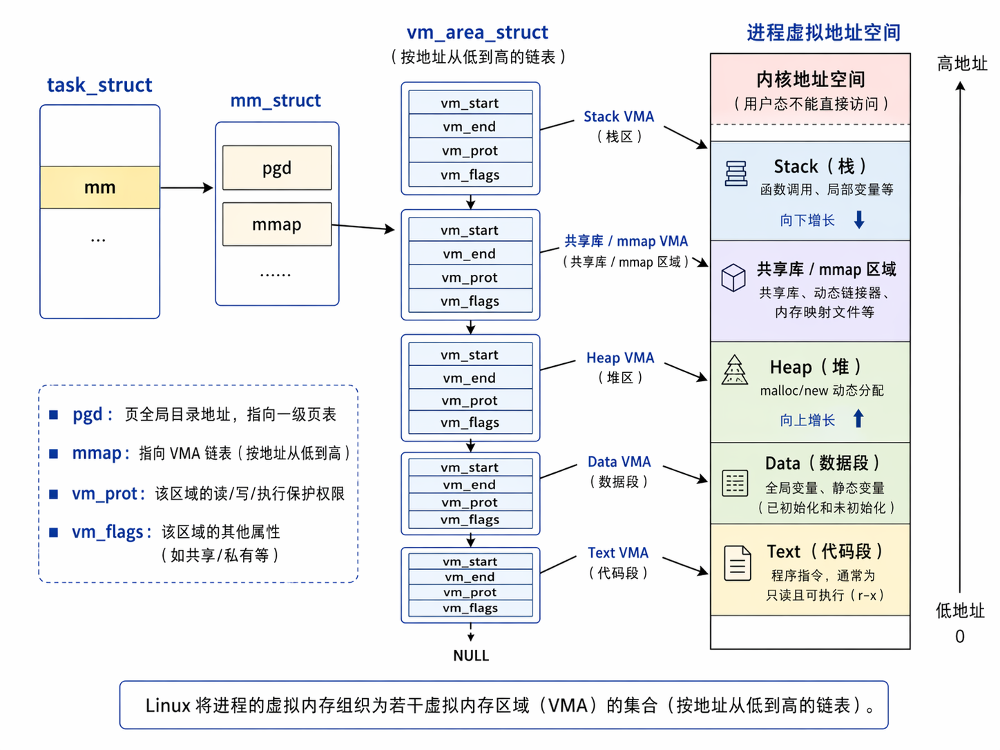
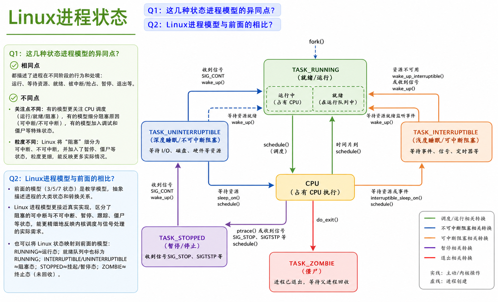
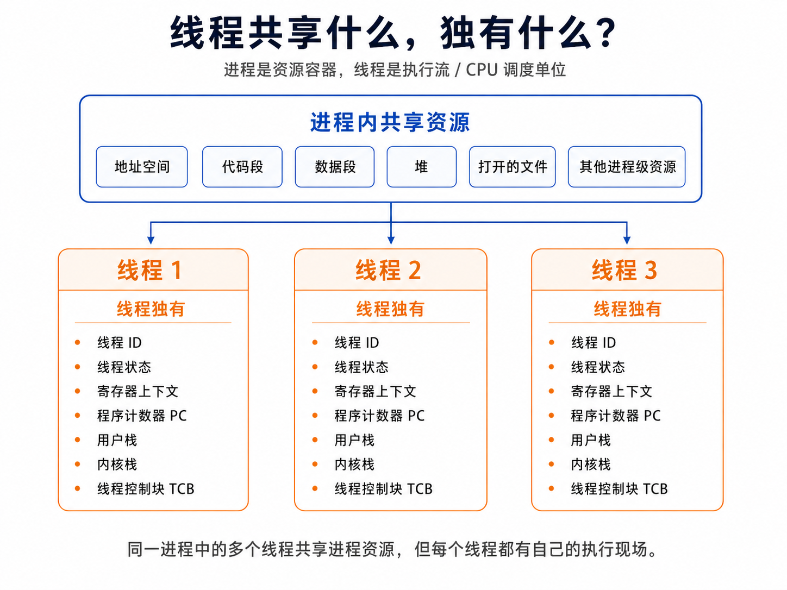

核心速览
这一讲真正想解决的问题，不是让你背一堆“进程、线程、协程”的定义，而是想让你理解：
操作系统如何把一个静态程序，变成一个可隔离、可调度、可暂停、可恢复、可阻塞、可唤醒、可终止的动态运行实体。
为了做到这件事，操作系统先引入了进程。
进程解决的是：“怎么描述一个正在运行的程序？”
接着，操作系统又发现进程有点太重了。一个进程既是资源容器，又是执行流，这两件事绑在一起，创建、切换、通信的成本都比较高。于是又引入了线程。
线程解决的是：“能不能在同一个资源容器里放多个执行流？”
后来，面对大量 I/O 密集型任务和海量连接，线程仍然显得有点重。于是语言和运行时又进一步引入了协程。
协程解决的是：“能不能用更轻的用户态任务，把等待 I/O 的时间让给别人？”
所以这讲的主线其实很清楚：
程序 → 进程 → 线程 → 协程
这不是几个并列概念，而是一条并发执行模型不断演化、不断变轻的路线。
一、为什么需要进程：从静态程序到动态执行实体
我们先不要急着背“进程是程序的一次执行过程”。这句话当然对，但它太像定义了，容易背完就忘。
我们先想一个更根本的问题：
如果操作系统里只有“程序”这个概念，够不够？
答案是不够。
程序只是磁盘上的一份静态文件。它可以是一段机器指令，可以是一个可执行文件，也可以说是某种算法的静态表达。它放在那里，本身不会动，也不会告诉操作系统：
- 我现在执行到哪一条指令了；
- 我现在用了哪些内存；
- 我打开了哪些文件；
- 我现在是在运行、等待，还是已经结束；
- 如果我被打断了，下次应该从哪里继续；
- 我是不是在等磁盘、键盘、网络或者另一个进程。
但这些恰恰是操作系统必须知道的东西。
所以，当系统进入并发环境以后，“程序”这个静态概念就不够用了。操作系统需要一个新的对象，用来描述“一个程序正在运行时的动态状态”。这个对象就是进程。
1. 顺序环境：一个程序独占整个世界
在早期的单道程序环境中，计算机系统里只有一个程序在运行。这个程序独占 CPU、内存、设备等资源，执行过程也不会被别的程序打断。
这种环境叫顺序环境。
顺序环境有三个很重要的特征：
- 顺序性：程序按照指令顺序一步一步执行。
- 封闭性：程序独占资源，不受其他程序影响。
- 可再现性：只要输入一样，运行结果就应该一样，和执行速度无关。
这时候的世界很单纯：一个程序，一个执行流，一套资源。它确实比较容易理解。
但它的问题也很明显：如果这个程序正在等磁盘读数据，CPU 就只能干等着。一个程序慢，整个系统就跟着慢。
于是操作系统引入了多道程序设计（Multiprogramming）。
2. 多道程序设计：让多个程序同时进入内存
多道程序设计的核心思想是：
允许多个程序同时进入内存并运行，从而提高系统资源利用率。
这里的“同时”不一定是物理意义上的同一瞬间。对于单核 CPU 来说，真正同一时刻仍然只能执行一个程序。但在一段时间内，多个程序都已经开始运行、还没有结束，并且它们轮流向前推进。
这就进入了并发环境。
并发环境可以这样理解：
在一段时间间隔内，单处理器上有两个或两个以上的程序同时处于“已经开始但尚未结束”的状态，并且它们的执行次序不是事先确定的。
gantt title 单处理器上的并发：多个程序的生命周期重叠 dateFormat X axisFormat %L section Program A A: 0, 4 section Program B B: 2, 7 section Program C C: 3, 6
在并发环境中执行的程序，就叫并发程序。
flowchart TD A[顺序环境] --> B[问题：CPU 经常等待 I/O] B --> C[办法：多道程序设计] C --> D[结果：多个程序同时进入内存] D --> E[形成并发环境] E --> F[程序需要新的动态描述方式] F --> G[进程]
并发环境和顺序环境最大的差别在于：程序不再是一路顺滑地跑到底了。
在顺序环境里，一个程序从开始到结束，基本可以被看成一条连续的执行线。程序运行时独占资源，外界不会随便打断它，所以我们只说“程序在运行”，问题也不大。
但到了并发环境里，事情就变了。一个程序可能执行一会儿就被操作系统切走，过一会儿再恢复；也可能因为等待 I/O 暂时停下来；还可能因为某个事件发生，又被重新唤醒。
这会带来几个新特征：
- 程序执行结果可能不可再现：特别是多个程序共享数据时，执行顺序不同，结果可能不同。
- 程序执行具有间断性：执行、暂停、再执行，不再是一口气跑到底。
- 资源共享：CPU、内存、文件、设备都可能被多个程序共享。
- 独立性和制约性并存：每个程序有自己的执行逻辑，但又可能因为共享资源、通信、同步而互相影响。
- 程序和计算不再一一对应：一个程序可以对应多个运行实例，一个运行实例也会经历多次暂停和恢复。
也正是因为这些变化，单纯的“程序”这个概念就不够用了。
程序只是静态代码，它只能回答“要执行哪些指令”，却回答不了：
- 现在执行到哪一条指令了？
- 当前寄存器、栈、变量是什么状态？
- 现在是正在运行，还是已经准备好但没拿到 CPU，还是正在等 I/O？
- 占用了哪些内存、文件和设备资源？
- 如果被暂停了，下次应该从哪里恢复？
- 同一个程序运行了两次，这两次运行应该怎么区分？
所以，并发环境真正提出的新问题是：
操作系统需要一个新的对象，来描述“程序正在运行时的那一份动态现场”。
这个对象就是进程。
你可以先把进程理解成：
进程 = 程序代码 + 当前执行现场 + 所占资源 + 操作系统管理信息
有了进程以后，操作系统才能说清楚：这个运行实例是谁，它执行到哪里了，它现在是什么状态，它在等什么，它占用了哪些资源，以及下次如何让它继续执行。
3. 什么是进程：程序的一次动态执行
进程（Process）也可以叫 Task 或 Job。不同教材和系统里的叫法可能不完全一样，但核心意思都是：操作系统中一个正在被管理的运行实体。
最直观地说，进程就是程序的一次执行过程。程序是静态的代码文件，而进程是这份代码真正跑起来之后形成的动态活动。比如你同时打开两个终端，各自运行同一个 vim，磁盘上的 vim 程序只有一份，但系统里会有两个不同的 vim 进程。
不过，从操作系统的角度看，进程不只是“代码正在执行”这么简单。
它还包括这次运行的全部现场：执行到哪里了，寄存器是什么值，栈在哪里，打开了哪些文件，占用了哪些内存，现在是能继续运行，还是正在等待某个事件。
所以，PPT 里才会从几个角度描述进程：
- 它是正在运行程序的抽象；
- 它把一个真实 CPU 变换成多个虚拟 CPU；
- 系统资源以进程为单位分配，比如内存、文件等；
- 每个进程具有独立的地址空间；
- 操作系统把 CPU 调度给进程。
把这些说法合起来，进程就可以理解为：
进程是具有独立功能的程序关于某个数据集合上的一次运行活动，是系统进行资源分配和调度的独立单位。
这句话里最重要的是三个点：
- 一次运行活动：进程是动态的，有开始、暂停、恢复和结束。
- 资源分配单位：内存、文件、I/O 设备等资源围绕进程来组织。
- 调度单位：在没有引入线程之前，操作系统把 CPU 分配给进程，让它运行。
所以，进程不是“程序”本身，而是：
程序在某个数据集合上的一次具体运行过程，加上操作系统为了管理这次运行而维护的全部状态和资源。
二、进程模型的两层抽象：虚拟 CPU 与虚拟内存
进程这个概念有两个最重要的抽象：
- 进程是对 CPU 的抽象。
- 地址空间是对内存的抽象。
这两句话听起来有点抽象，但其实非常关键。前者解释了为什么多个进程可以在有限 CPU 上并发推进；后者解释了为什么每个进程都像拥有自己的独立虚拟内存。
1. 进程是对 CPU 的抽象
真实的 CPU 数量是有限的。单核机器上甚至只有一个 CPU。
但操作系统通过分时复用、调度、保存现场、恢复现场、上下文切换，让每个进程都好像拥有一个自己的 CPU。
一个进程正在运行时，它有自己的：
- 程序计数器 PC；
- 寄存器状态；
- 栈和栈指针；
- 当前执行位置；
- 调度状态。
当操作系统要切换到另一个进程时，它会先把当前进程的 CPU 现场保存起来。等下次这个进程再次被调度时，再把这些现场恢复回 CPU。
于是这个进程就会感觉：
我只是被暂停了一下，现在又从刚才的位置继续执行了。
所以，“进程是对 CPU 的抽象”可以解释成：
操作系统把一个或少数几个物理 CPU，抽象成许多个虚拟 CPU；每个进程都像运行在自己的虚拟 CPU 上。
2. 地址空间是对内存的抽象
操作系统给进程提供的内存空间，不是直接的物理地址空间，而是虚拟地址空间。
也就是说，用户程序里看到的地址，比如变量地址、堆地址、栈地址，都是虚拟地址。
这就是为什么两个进程里可以有“相同的地址”，但互不影响。
课件里的 myval 例子就是为了说明这一点：同时运行两个 myval 程序，一个传入 5，一个传入 6。它们打印出的变量值不同，但变量地址可能相同。
这不是系统出错了，而是因为：
它们看到的是各自地址空间里的虚拟地址。相同的虚拟地址，可以映射到不同的物理页。
如果开启 ASLR，也就是地址空间布局随机化，同一个程序每次运行时地址还可能不同。可以用下面命令临时关闭 ASLR：
sudo sysctl -w kernel.randomize_va_space=0关闭后，重复运行同一个程序，地址往往会更稳定。
虚拟地址空间带来的好处很多：
- 隔离：每个进程有自己的地址空间，互不干扰。
- 保护：页表可以设置读、写、执行权限。
- 装载方便：程序不需要关心自己真实放在物理内存哪里。
- 共享方便：共享库可以映射进多个进程。
- 支持按需分页：页面不一定一开始全部进入物理内存。
- 支持写时复制 COW：fork 后父子进程可以先共享物理页，写的时候再复制。
三、操作系统如何抓住一个进程：进程映像、PCB 与地址空间
前面我们说，进程不是静态程序，而是一个正在运行的动态实体。
但这里马上会遇到一个问题：
一个动态运行的东西，操作系统到底怎么管理它？
毕竟，进程不是一个简单的文件，也不是内存里孤零零的一段代码。它会被暂停、恢复、阻塞、唤醒、切换、终止。操作系统如果想管理它，就必须随时知道：
- 这个进程是谁？
- 它现在执行到哪里了？
- 它现在是什么状态？
- 它的寄存器和栈是什么样？
- 它占用了哪些内存？
- 它打开了哪些文件？
- 它下次恢复时应该从哪里继续？
所以，操作系统必须为每个进程维护一整套“运行档案”。
这套运行档案分布在两个地方：
- 在用户空间里，是这个进程真正要执行和使用的内容，比如代码、数据、堆、栈、共享库；
- 在内核空间里，是操作系统为了管理它而维护的结构，比如 PCB、页表、内核栈、打开文件表、调度信息。
也就是说，操作系统不是通过“程序文件”来管理进程，而是通过这些运行时结构来管理进程。
这一节我们就来看三个最核心的东西：
- 进程映像：一个进程在系统中的完整存在形态；
- PCB：操作系统描述和控制进程的核心数据结构；
- 地址空间：进程看到的那套虚拟内存视图。
1. 进程和程序的区别
程序是静态的，进程是动态的。
程序是磁盘上的一份代码和数据，比如一个可执行文件。它相对长久，本身不会运行。
进程是程序的一次执行过程。它会被创建、调度、阻塞、唤醒、终止。它有生命周期。
几个重要区别要记住：
- 程序是静态的，进程是动态的。
- 程序相对长久，进程有诞生和消亡。
- 一个程序可以对应多个进程。
- 进程更能准确刻画并发，程序不能。
- 进程可以创建其他进程。
进程还可以按照作用和行为分成：
- 系统进程和用户进程；
- 前台进程和后台进程；
- CPU 密集型进程和 I/O 密集型进程。
在 UNIX 系统中，进程通常形成家族树。传统上 init 是根进程，现在很多 Linux 系统里 systemd 扮演类似角色。
在 Windows 中，进程之间的地位更接近平等关系，不像 UNIX 那样强调清晰的父子进程树。
怎么查看当前系统中有多少进程？
Linux / macOS 中可以用：
ps aux top htop pstreeWindows 中可以用任务管理器，也可以用：
tasklist
2. 进程映像：进程到底在哪里？
进程映像（process image)可以理解为一个进程在系统中的完整存在形态。
它不是单纯的一段代码，而是包括：
- 程序代码；
- 初始化数据；
- 未初始化数据；
- 堆；
- 用户栈；
- 共享库；
- 内存映射文件；
- 打开的文件；
- 页表；
- CPU 上下文；
- PCB；
- 内核栈等
课件最后给了一个非常适合记忆的概括：
进程映像 = 程序 + 数据 + 栈 + PCB
当然，真实系统会比这更复杂，但这句话已经抓住主干了。
那进程有实体吗？
有，但它不是一个集中放在某个地方的“物体”。它的实体分散在用户空间、内核空间，甚至在某些情况下还可能部分在磁盘上。
具体来说：
- 在用户地址空间里，有代码段、数据段、堆、用户栈、共享库等。
- 在内核数据结构里，有 PCB、页表、内核栈、打开文件表、调度信息等。
- 如果进程被挂起，进程映像的一部分还可能被交换到磁盘上。
flowchart LR A[进程映像] --> B[用户空间] A --> C[内核空间] A --> D[必要时换出到磁盘] B --> B1[代码段] B --> B2[数据段] B --> B3[堆] B --> B4[用户栈] B --> B5[共享库 / mmap] C --> C1[PCB] C --> C2[页表] C --> C3[内核栈] C --> C4[打开文件表] C --> C5[调度信息]
所以更准确的说法是：
进程的实体是“用户空间中的进程映像 + 内核空间中用于管理它的数据结构”。
3. PCB：操作系统感知进程存在的唯一标志
PCB（Process Control Block），也叫进程控制块、进程描述符、进程属性，是操作系统中表示进程的数据结构。
它记录进程的各种属性，描述进程的动态变化过程。
Important
进程表：所有进程的PCB的集合
这里一定要记住一句话：
进程与 PCB 一一对应，PCB 是操作系统感知进程存在的唯一标志。
当一个进程暂时不运行时，操作系统必须把它的“硬件现场”保存起来。下次它再被调度，操作系统再恢复这些现场。
所以 PCB 很像一个游戏存档：
你打游戏打到一半退出，游戏必须保存你的位置、血量、背包、任务进度。下次读档时，你才能从原来的地方继续。
进程被切走时，PCB 就是在保存它的“运行存档”。
PCB 的主要内容可以分成几类。
进程描述信息
- PID，进程标识符，通常是唯一整数；
- 进程名，通常基于可执行文件名，但不唯一；
- 用户标识符 UID；
- 进程组关系；
- 父子进程关系。
进程控制信息
- 当前状态；
- 优先级；
- 调度策略；
- 代码执行入口地址；
- 可执行文件名或磁盘地址；
- 运行统计信息，比如执行时间、页面调度情况；
- 阻塞原因；
- 队列指针；
- 消息队列指针；
- 进程间同步和通信相关信息。
资源信息
- 虚拟地址空间现状；
- 指向段表或页表的指针；
- 打开文件列表；
- 当前工作目录；
- 文件系统相关信息；
- 信号处理相关信息；
- 拥有的资源及使用情况。
CPU 现场信息 Context
- 通用寄存器；
- 程序计数器 PC；
- 状态寄存器 PSW；
- 栈指针 SP；
- 其他与体系结构相关的寄存器。
flowchart LR A[PCB] --> B[标识信息] A --> C[控制信息] A --> D[资源信息] A --> E[CPU 现场信息] B --> B1[PID / UID / 父子关系] C --> C1[状态 / 优先级 / 阻塞原因 / 队列指针] D --> D1[地址空间 / 页表 / 打开文件] E --> E1[PC / SP / PSW / 通用寄存器]
4. Linux、Solaris、xv6 中的 PCB
不同系统里 PCB 的具体名字不同，但思想类似。
Linux 中，核心结构是 task_struct。它非常复杂，包含状态、优先级、调度队列、父子关系、内存地址空间、打开文件、文件系统、信号、权限、资源限制、安全信息、I/O 上下文等。
Solaris 的 proc_t 也很典型。它会关联进程地址空间、认证信息、会话信息、PID/GID、信号支持、打开文件、可执行文件、线程链表、资源控制、zone 信息等。
这说明真实系统里的“进程”不是一个单薄对象，而是一整张资源关系网。
相比之下，xv6 的 struct proc 特别适合学习：
lock：保护进程结构的锁；state：进程状态；chan：睡眠等待的 channel；killed：是否被杀死；xstate：退出状态，返回给父进程的wait；pid：进程 ID；parent：父进程；kstack：内核栈虚拟地址；sz：用户内存大小；pagetable：用户页表；trapframe：陷入内核时保存用户寄存器现场；context：内核上下文，供调度切换使用；ofile：打开文件数组；cwd：当前工作目录；name：进程名，主要用于调试。
怎么看这些系统结构？
Linux 是现实世界，细节很全。
xv6 是教学世界，骨架很清楚。
学习时可以先用 xv6 抓住主干，再用 Linux 理解真实系统为什么复杂。
5. 操作系统如何描述地址空间
一个典型进程的虚拟地址空间大致是这样：

从程序到进程，可以这样理解：
flowchart LR A[源代码文件] --> B[编译链接] B --> C[可执行文件<br/>文件头 + 代码 + 初始化数据] C --> D[加载] D --> E[进程地址空间<br/>代码段 + 数据段 + 堆 + 栈 + 共享库] E --> F[页表] F --> G[物理内存]
在 Linux 里，描述地址空间的主线可以记成：
task_struct → mm_struct → vm_area_struct → 页表
其中：
task_struct是进程 / 线程的核心描述结构；mm_struct描述进程的整个虚拟地址空间；vm_area_struct描述一段连续的虚拟内存区域，也就是 VMA；- 页表负责把虚拟地址翻译成物理地址。
每个 vm_area_struct 通常会记录：
- 起始地址；
- 结束地址；
- 访问权限；
- 区域标志；
- 如果映射了文件，就指向对应文件；
- 和其他 VMA 的链接关系。
flowchart LR A[task_struct] --> B[mm_struct] B --> C1[代码段 VMA] B --> C2[数据段 VMA] B --> C3[堆 VMA] B --> C4[共享库 / mmap VMA] B --> C5[栈 VMA] B --> D[页表] D --> E[物理页框]
内存区域可以分成两类：
-
有名内存区域：映射了某个文件，比如共享库、mmap 文件，文件描述保存在
vm_file中。 -
匿名映射内存区域：没有对应文件，比如堆、栈、匿名 mmap。
Note
有名内存区域与匿名映射内存区域
在理解
vm_area_struct时，课件里提到两类内存区域：
- 有名内存区域
- 匿名映射内存区域
这里的“有名 / 匿名”，不是说这段内存有没有变量名，而是说：
这段虚拟内存区域背后有没有一个文件作为来源或对应物。
也就是说，我们关心的是这个 VMA 的
vm_file字段有没有指向某个文件。1. 有名内存区域：背后有文件
有名内存区域指的是：这段虚拟地址空间映射到了某个文件。
常见例子包括：
- 可执行文件的代码段；
- 共享库，比如
libc.so；- 动态链接器，比如
ld.so；- 通过
mmap映射进来的普通文件。这些区域在内核的
vm_area_struct中，vm_file通常会指向某个文件对象。可以这样理解：
有名内存区域不是凭空来的，它可以追溯到磁盘上的某个文件。
比如一个程序运行时，可执行文件中的代码段会被映射到进程地址空间中：
虚拟地址区域 0x400000 - 0x401000 ↓ 映射到磁盘文件 /home/user/a.out 的某一部分所以它叫“有名”，是因为这段虚拟内存背后有明确的文件来源。
在
/proc/PID/maps中，有名区域通常会在最后显示文件路径，例如：00400000-00401000 r-xp 00000000 fc:01 925064 /root/tmp/hello 7f1aa1e2a000-7f1aa1fe4000 r-xp 00000000 fc:01 25054 /usr/lib64/libc-2.17.so最后的
/root/tmp/hello、/usr/lib64/libc-2.17.so就说明这些区域是文件映射来的。
2. 匿名映射内存区域：背后没有文件
匿名映射内存区域指的是：这段虚拟地址空间没有对应的普通磁盘文件。
它不是从某个文件加载进来的，而是内核按需提供的一段内存空间。
常见例子包括：
- 堆
heap；- 栈
stack；- 匿名
mmap；- 进程运行时临时分配的内存。
比如你调用：
int *p = malloc(sizeof(int));这块内存通常来自堆。堆区域没有对应的磁盘文件，它只是进程需要动态内存时，操作系统给它扩展出来的一段虚拟内存区域。
再比如栈：
函数调用、局部变量、返回地址这些内容也不是从某个文件加载来的，而是进程运行过程中临时需要的空间。
在
/proc/PID/maps中，匿名区域通常没有文件路径，或者显示特殊名字，例如：00c0b000-00c2c000 rw-p 00000000 00:00 0 [heap] 7ffc47264000-7ffc47285000 rw-p 00000000 00:00 0 [stack] 7f1aa21e9000-7f1aa21ee000 rw-p 00000000 00:00 0其中
[heap]、[stack]是内核为了方便阅读加上的提示，它们并不是普通磁盘文件。
3. 二者的核心区别
可以先用一句话记住：
有名映射背后有文件，匿名映射背后没有普通文件。
更具体地说：
对比项 有名内存区域 匿名映射内存区域 是否对应文件 对应某个文件 不对应普通磁盘文件 vm_file通常非空 通常为空 来源 可执行文件、共享库、mmap 文件 堆、栈、匿名 mmap /proc/PID/maps表现通常能看到文件路径 通常没有路径，或显示 [heap]、[stack]内容来源 可以从文件加载 通常由内核分配，初始可能是全 0 页 典型用途 加载代码、共享库、映射文件 动态内存、函数调用栈、临时内存 4. 一个直觉类比
有名映射像你把一本书的某几页摊开放到桌面上。
桌面上的某块区域 ← 《某本书》第 10 页到第 20 页这块区域里的内容来自一本明确的书，所以它“有名”。
匿名映射像你拿了一叠空白纸放到桌面上。
桌面上的某块区域 ← 系统临时给你的一叠空白纸这些纸不是从某本书里撕下来的，而是系统临时提供的空间，所以它“匿名”。
5. 和
mmap的关系这里有一个容易混的点：
mmap既可以创建有名映射，也可以创建匿名映射。如果你
mmap一个文件：mmap(..., fd, ...)这就是有名映射，因为它背后有文件。
如果你使用匿名映射：
mmap(..., MAP_ANONYMOUS, -1, ...)这就是匿名映射，因为它没有文件来源。
所以不要简单地认为：
mmap区域 = 有名映射更准确的说法是：
mmap是一种建立虚拟内存映射的机制，它既可以映射文件，也可以申请匿名内存。
6. 小结
Linux 用
vm_area_struct描述进程中的一段虚拟内存区域。判断这段区域是有名还是匿名，关键看它背后有没有对应文件。
- 如果
vm_file指向某个文件，这通常是有名内存区域。- 如果
vm_file为空，这通常是匿名映射内存区域。一句话总结：
有名内存区域是“背后有文件”的虚拟内存区域；匿名映射内存区域是“背后没有普通文件、由内核临时提供”的虚拟内存区域。
6. /proc/PID/maps：直接观察进程地址空间
在 Linux 中，可以用：
cat /proc/PID/maps查看某个进程的虚拟内存映射。
它显示的是进程映射的内存区域和访问权限。
一个典型输出里会看到：
- 程序自己的代码段；
- 程序自己的只读数据段；
- 程序自己的可写数据段；
[heap]堆区域；libc、ld等共享库；- 匿名映射区域；
[stack]栈区域；[vdso]、[vsyscall]等特殊区域。
权限字段也很有用：
r：可读；w：可写；x：可执行；p：私有映射；s：共享映射。
课件里的小程序是：
#include <stdio.h>
#include <stdlib.h>
int main() {
printf("hello, world!");
int *a = malloc(sizeof(int));
getchar();
return 0;
}它有几个好处：
malloc用到了堆；- 字符串常量用到了只读数据区域；
getchar()让进程不会自动退出，方便我们去看/proc/PID/maps。
地址空间的本质
地址空间不是一整块简单数组，而是一组虚拟内存区域的集合。
Linux 用 VMA 组织这些区域，再用页表完成虚拟地址到物理地址的翻译。
四、进程如何动起来：状态、转换、队列与原语
到这里，我们已经知道进程不是一段静态代码，而是一个正在运行、会被操作系统管理的动态实体。
但只知道“进程是什么”还不够。操作系统真正关心的是：
这个进程现在能不能运行？如果不能，是因为没轮到 CPU，还是因为它在等某个事件？如果它状态变了，内核应该把它放到哪里？
所以这一节要解决的是进程的“动态管理”问题。
这一部分可以抓住一条主线：
状态模型描述进程现在处于什么处境；队列模型说明内核把进程放在哪里；进程控制原语负责完成状态和队列的改变。
换句话说：
状态：逻辑视角，说明进程现在是什么情况
队列：实现视角，说明 PCB 现在挂在哪个队列里
原语：操作视角，说明内核如何安全地改变状态和队列1. 状态模型到底在回答什么问题？
进程状态模型不是为了让我们背几个名字，而是在回答一个很实际的问题：
操作系统现在应该怎么对待这个进程？
最基本地看，操作系统需要判断三件事：
- 这个进程是不是正在 CPU 上运行？
- 这个进程是不是已经准备好运行，只是还没拿到 CPU？
- 这个进程是不是正在等待某个事件，所以暂时不能运行？
于是，就有了三种基本状态。
2. 三种基本状态：能不能运行？
进程最基本的三种状态是：
- 运行态 Running：进程正在占有 CPU，并在 CPU 上执行。
- 就绪态 Ready：进程已经具备运行条件，但因为暂时没有 CPU，所以还不能运行。
- 等待态 / 阻塞态 Waiting / Blocked：进程正在等待某个事件，比如 I/O 完成、键盘输入、锁释放等。即使现在给它 CPU，它也运行不了。
三种状态的直觉理解
运行态：我正在做题。
就绪态：我已经准备好了，只是在等老师叫我上台。
阻塞态：我现在缺一张题纸，就算你叫我上台我也做不了。
这三个状态最关键的区别是：
| 状态 | 是否具备运行条件 | 是否正在占用 CPU | 直觉 |
|---|---|---|---|
| 运行态 Running | 是 | 是 | 正在跑 |
| 就绪态 Ready | 是 | 否 | 能跑，但没轮到 CPU |
| 阻塞态 Blocked | 否 | 否 | 不能跑，正在等事件 |
这里最容易混的是就绪态和阻塞态。
它们都没有占用 CPU，但原因完全不同：
- 就绪态是：“我能运行，只是 CPU 还没轮到我。”
- 阻塞态是：“我现在还不能运行，因为我在等某个事件。”
所以判断一个进程是 Ready 还是 Blocked，关键不是看它有没有 CPU，而是看它是否已经具备运行条件。
3. 五状态模型：把“出生”和“死亡”纳入管理
三状态模型主要描述的是进程运行过程中的流转。
但真实系统里，进程并不是一开始就天然处于 Ready，也不是一退出就立刻从系统里消失。创建和终止本身也需要操作系统处理。
所以五状态模型在三状态基础上增加了两个状态：
- 创建态 New
- 终止态 Terminated
创建态 New
创建态表示：操作系统已经开始创建这个进程，并且完成了一些必要工作，比如分配 PID、建立 PCB 等，但这个进程还没有正式进入就绪队列。
也就是说：
创建态是“进程正在被造出来，但还没被允许运行”。
比如系统资源有限时，进程可能已经有了 PCB，但暂时还不能被接纳执行。
终止态 Terminated
终止态表示：进程已经停止执行，但操作系统还要做收尾工作。
这些收尾工作可能包括：
- 保存退出状态；
- 做运行统计；
- 关闭打开文件；
- 释放内存；
- 回收 PCB；
- 让父进程通过
wait()获得退出信息。
也就是说：
终止态是“进程已经不跑了，但还没完全从系统里清理干净”。
五状态模型可以画成这样：
stateDiagram-v2 [*] --> New New --> Ready: 创建完成 / 被接纳 Ready --> Running: 被调度 Running --> Ready: 时间片用完 / 被抢占 Running --> Blocked: 等待事件 Blocked --> Ready: 事件发生 / 被唤醒 Running --> Terminated: exit / error / kill Terminated --> [*]
这张图的核心不是箭头数量，而是这几个问题：
- 进程是怎么从“还没开始运行”进入系统的？
- 进程什么时候能被调度？
- 进程为什么会从运行态退出来？
- 进程等待的事件发生后，为什么先回到就绪态？
- 进程结束后，为什么还要有终止态？
4. 七状态模型：再考虑“进程是否还在内存中”
五状态模型默认一个前提：
进程只要没有终止，就还在内存里。
但真实系统中，如果内存紧张，或者系统想调节负载，操作系统可能会把某些进程暂时换出到磁盘上。这就是挂起（Suspend）。
挂起的关键意思是：
进程暂时不占用内存，它的进程映像被换到磁盘上。
于是，状态模型里就多了一个维度：
这个进程现在在不在内存中？
对于就绪态和阻塞态，都可能出现“不在内存中”的版本：
- 就绪挂起 Ready Suspend：进程已经具备运行条件，但暂时被换出到磁盘上，所以还不能立刻运行。
- 阻塞挂起 Blocked Suspend：进程本来就在等事件，同时又被换出到磁盘上。
所以七状态模型并不是乱加状态，而是把两个问题合在一起看：
| 问题 | 可能答案 |
|---|---|
| 进程是否具备运行条件？ | 就绪 / 阻塞 |
| 进程是否在内存中？ | 在内存 / 被挂起到磁盘 |
于是就出现了：
- 就绪态 Ready；
- 阻塞态 Blocked；
- 就绪挂起 Ready Suspend；
- 阻塞挂起 Blocked Suspend。
再加上：
- 创建态 New；
- 运行态 Running；
- 终止态 Terminated；
这就是七状态模型。
stateDiagram-v2 [*] --> New New --> Ready: 创建完成 / 接纳 Ready --> Running: 调度 Running --> Ready: 时间片用完 / 抢占 Running --> Blocked: 等待事件 Blocked --> Ready: 事件发生 Ready --> ReadySuspend: 挂起 / 换出 ReadySuspend --> Ready: 激活 / 换入 Blocked --> BlockedSuspend: 挂起 / 换出 BlockedSuspend --> Blocked: 激活 / 换入 BlockedSuspend --> ReadySuspend: 等待事件发生 Running --> Terminated: 退出 / 错误 / 被杀死 Terminated --> [*]
这里有两个转换特别值得注意。
第一个是：
Blocked Suspend → Ready Suspend意思是：进程虽然还在磁盘上，但它等待的事件已经发生了，所以它不再是“阻塞挂起”，而是“就绪挂起”。只要以后被换回内存，就可以进入就绪队列等待调度。
第二个是：
Ready Suspend → Ready意思是：这个进程本来已经具备运行条件，只是被换出到磁盘了。操作系统把它换回内存后，它就可以进入就绪态。
5. 一句话串起三种状态模型
可以这样理解：
三状态模型回答：进程现在是在运行、能运行但没 CPU，还是因为等事件不能运行？
五状态模型在此基础上加入：进程的创建和终止也需要被管理。
七状态模型再进一步加入：进程可能暂时不在内存中，而是被挂起到磁盘上。
所以状态模型不是越多越高级，而是看操作系统想描述多少细节。
如果只关心 CPU 调度，三状态够用。
如果还关心进程生命周期，五状态更完整。
如果还关心内存换入换出和负载调节，就需要七状态。
三状态：运行过程
五状态：运行过程 + 创建 / 终止
七状态：五状态 + 是否在内存中6. 状态转换：条件与操作
前面我们已经看了状态图，现在把关键转换统一整理一下。
| 转换 | 触发条件 | 内核做什么 |
|---|---|---|
New → Ready | 进程创建完成，并被系统接纳 | 初始化 PCB、地址空间等，把进程加入就绪队列 |
Ready → Running | 调度器选择该进程 | 恢复上下文，把 CPU 交给该进程 |
Running → Ready | 时间片用完、被抢占、主动让出 CPU | 保存上下文，放回就绪队列 |
Running → Blocked | 等待 I/O、锁、消息、子进程等事件 | 执行阻塞操作，把进程放入对应等待队列 |
Blocked → Ready | 等待事件发生 | 执行唤醒操作，把进程移回就绪队列 |
Running → Terminated | 正常退出、出错、被杀死 | 释放资源，保存退出状态，进入终止处理 |
Ready → Ready Suspend | 内存紧张或调节负载 | 把进程映像换出到磁盘 |
Blocked → Blocked Suspend | 内存紧张或调节负载 | 把阻塞进程换出到磁盘 |
Ready Suspend → Ready | 被重新换入内存 | 进入就绪队列 |
Blocked Suspend → Ready Suspend | 等待事件在挂起期间发生 | 标记为就绪挂起，等待以后换入 |
这里尤其要注意：
Blocked → Ready 不是 Blocked → Running。
因为等待事件发生，只说明这个进程重新具备运行条件。它能不能马上运行，还要看调度器是否选择它。
7. 状态转换是否必然连锁？
不一定。
状态转换之间经常有关联，但不是严格一一触发。
比如：
- 一个进程
Blocked → Ready，只是说明它等待的事件完成了，但它不一定马上Ready → Running。 - 一个进程
Running → Blocked，CPU 空出来了，调度器通常会选择另一个就绪进程运行；但如果没有就绪进程，系统可能运行 idle 进程。 - 一个进程
Running → Ready，调度器重新选择时，理论上也可能又选中它自己。
所以更准确的理解是：
一个状态转换可能创造另一个转换的条件，但不必然导致另一个转换立即发生。
8. 队列模型：状态转换在内核里怎么落地？
状态图告诉我们“进程处于什么状态”，但操作系统实现时不会只画图。它需要具体的数据结构来组织进程。
这个数据结构就是进程队列。
操作系统会为不同状态或不同等待事件维护一个或多个队列，队列中的元素通常是 PCB。
比如：
- 就绪队列；
- 等待磁盘 I/O 的队列；
- 等待键盘输入的队列；
- 等待某个锁的队列；
- 等待某个消息的队列。
当进程状态改变时，本质上就是它的 PCB 从一个队列移动到另一个队列。
例如，一个进程正在运行时发起磁盘读请求：
Running
↓ 请求磁盘读
磁盘 I/O 等待队列
↓ 磁盘中断：I/O 完成
Ready Queue
↓ 调度器选择
Running可以画成这样：
flowchart LR A[Running<br/>当前占用 CPU] -->|请求磁盘读| B[磁盘 I/O 等待队列] B -->|磁盘中断：I/O 完成| C[Ready Queue] C -->|调度器选择| A A -->|时间片用完| C A -->|等待键盘输入| D[键盘等待队列] D -->|键盘中断：输入到达| C
所以：
状态变化的实现，本质上就是 PCB 在不同队列之间移动。
就绪队列也可以有多个，比如按照优先级分成多个队列。单 CPU 情况下，真正处于运行态的进程通常只有一个。
9. 原语：安全地完成状态和队列变化
状态改变听起来像是“改个变量”，但操作系统里绝不是这么简单。
比如把一个进程从运行态变成阻塞态，可能要做这些事情：
- 保存当前 CPU 上下文；
- 修改 PCB 中的状态；
- 把 PCB 放入对应等待队列；
- 从当前运行位置移走；
- 调用调度器选择下一个进程。
这些操作必须作为一个整体完成。不能做到一半突然被打断。
否则可能出现很严重的问题：比如进程状态已经改成阻塞，但还没放入等待队列。这时如果被中断，系统之后可能找不到这个进程了。它既不在运行，也不在等待队列里，相当于“丢了”。
所以操作系统会提供一组具有特定功能的原语（primitive）。
原语是什么？
原语就是操作系统内核中完成某个基础操作的一小段程序。它在执行过程中要求不可被中断、不可被分割，因此具有原子性。
常见进程控制原语包括：
- 进程创建原语；
- 进程撤销原语；
- 阻塞原语；
- 唤醒原语；
- 挂起原语；
- 激活原语；
- 改变进程优先级。
flowchart LR A[进程控制原语] --> B[创建] A --> C[撤销] A --> D[阻塞] A --> E[唤醒] A --> F[挂起] A --> G[激活] A --> H[改变优先级]
这一节可以这样收束：
状态模型告诉我们“进程可能处于哪些处境”；队列模型告诉我们“内核把这些进程放在哪里”；原语则负责“安全地完成状态改变和队列移动”。
10. Linux 和 xv6 的实际进程状态
通用状态模型是为了帮助我们理解，但真实系统里的状态名会更细。
Linux 中的常见状态
Linux 中常见状态包括：
- TASK_RUNNING：既可能表示正在 CPU 上运行，也可能表示处于就绪队列，等待调度。
- TASK_INTERRUPTIBLE：可中断睡眠，等待资源，但可以被信号唤醒。
- TASK_UNINTERRUPTIBLE：不可中断睡眠，通常在等待底层硬件 I/O，不响应普通信号。
- TASK_STOPPED：暂停状态，比如被调试器或信号暂停。
- TASK_ZOMBIE：僵尸状态，进程已经退出，但父进程还没有通过
wait()回收它的退出信息。
Linux 的状态名和教材里的三状态 / 五状态不是一一对应，但能大致映射：
TASK_RUNNING可以对应 Running 或 Ready；TASK_INTERRUPTIBLE、TASK_UNINTERRUPTIBLE可以对应 Blocked；TASK_ZOMBIE对应终止后尚未完全回收；TASK_STOPPED是暂停类状态。
xv6 中的状态
xv6 的状态更适合学习，因为它非常干净：
enum procstate { UNUSED, USED, SLEEPING, RUNNABLE, RUNNING, ZOMBIE };大致可以这样对应：
- UNUSED：进程表项空闲。
- USED：进程结构已经分配，但还没有完全进入可运行状态。
- SLEEPING：阻塞态，正在等待某个 channel。
- RUNNABLE：就绪态，可以运行，只差 CPU。
- RUNNING：运行态，正在 CPU 上执行。
- ZOMBIE：已经退出，但还没被父进程回收。
stateDiagram-v2 UNUSED --> USED: allocproc USED --> RUNNABLE: fork / userinit RUNNABLE --> RUNNING: scheduler RUNNING --> RUNNABLE: yield RUNNING --> SLEEPING: sleep SLEEPING --> RUNNABLE: wakeup RUNNING --> ZOMBIE: exit ZOMBIE --> UNUSED: wait / freeproc
读 xv6 的时候，最重要的是盯住：
状态在哪里被改掉？PCB 什么时候被放到队列里？什么时候从调度器回来？
11. 本节小结
这一节可以压缩成一句话：
进程状态描述“进程现在能不能运行”，队列描述“PCB 当前在哪里排队”，原语负责“安全地移动 PCB 并改变状态”。
再压缩成一条流程：
进程运行
↓
因为时间片、I/O、事件、退出等原因发生状态变化
↓
内核通过原语修改 PCB
↓
PCB 在运行位置、就绪队列、等待队列、终止状态之间移动
↓
调度器选择下一个进程运行这样理解之后，状态图、队列模型和原语就不是三块分散知识，而是一套完整机制。 可以。你现在这一整节的问题不是某一个小段写错了，而是结构顺序需要重新排：你前面已经把“三状态 → 五状态 → 七状态”的关系写清楚了，但后面又单独展开“状态转换条件和操作”，再讲“是否连锁”，再讲 Linux/xv6，再讲队列和原语，导致逻辑有点来回跳。
我建议这一整部分改成下面这个顺序：
状态模型为什么出现 → 三状态 / 五状态 / 七状态 → 转换条件 → 队列是实现方式 → 原语是操作工具 → Linux/xv6 是现实落地。
这样读者会先理解“状态是什么”，再理解“怎么转”，再理解“OS 具体怎么实现”。
下面这一版可以直接替换你当前整个“## 四、进程如何动起来：状态、队列与原语”。
四、进程如何动起来：状态、转换、队列与原语
到这里，我们已经知道进程不是一段静态代码，而是一个正在运行、会被操作系统管理的动态实体。
但只知道“进程是什么”还不够。操作系统真正关心的是：
这个进程现在能不能运行？如果不能，是因为没轮到 CPU，还是因为它在等某个事件？如果它状态变了，内核应该把它放到哪里？
所以这一节要解决的是进程的“动态管理”问题。
这一部分可以抓住一条主线：
状态模型描述进程现在处于什么处境；队列模型说明内核把进程放在哪里；进程控制原语负责完成状态和队列的改变。
换句话说：
状态：逻辑视角，说明进程现在是什么情况
队列：实现视角，说明 PCB 现在挂在哪个队列里
原语：操作视角，说明内核如何安全地改变状态和队列1. 状态模型到底在回答什么问题？
进程状态模型不是为了让我们背几个名字，而是在回答一个很实际的问题：
操作系统现在应该怎么对待这个进程？
最基本地看，操作系统需要判断三件事：
- 这个进程是不是正在 CPU 上运行？
- 这个进程是不是已经准备好运行，只是还没拿到 CPU？
- 这个进程是不是正在等待某个事件，所以暂时不能运行？
于是，就有了三种基本状态。
2. 三种基本状态：能不能运行？
进程最基本的三种状态是：
- 运行态 Running：进程正在占有 CPU，并在 CPU 上执行。
- 就绪态 Ready：进程已经具备运行条件，但因为暂时没有 CPU，所以还不能运行。
- 等待态 / 阻塞态 Waiting / Blocked：进程正在等待某个事件，比如 I/O 完成、键盘输入、锁释放等。即使现在给它 CPU，它也运行不了。
三种状态的直觉理解
运行态：我正在做题。
就绪态：我已经准备好了，只是在等老师叫我上台。
阻塞态：我现在缺一张题纸，就算你叫我上台我也做不了。
这三个状态最关键的区别是：
| 状态 | 是否具备运行条件 | 是否正在占用 CPU | 直觉 |
|---|---|---|---|
| 运行态 Running | 是 | 是 | 正在跑 |
| 就绪态 Ready | 是 | 否 | 能跑，但没轮到 CPU |
| 阻塞态 Blocked | 否 | 否 | 不能跑，正在等事件 |
这里最容易混的是就绪态和阻塞态。
它们都没有占用 CPU，但原因完全不同：
- 就绪态是：“我能运行，只是 CPU 还没轮到我。”
- 阻塞态是：“我现在还不能运行，因为我在等某个事件。”
所以判断一个进程是 Ready 还是 Blocked，关键不是看它有没有 CPU，而是看它是否已经具备运行条件。
3. 五状态模型：把“出生”和“死亡”纳入管理
三状态模型主要描述的是进程运行过程中的流转。
但真实系统里，进程并不是一开始就天然处于 Ready，也不是一退出就立刻从系统里消失。创建和终止本身也需要操作系统处理。
所以五状态模型在三状态基础上增加了两个状态：
- 创建态 New
- 终止态 Terminated
创建态 New
创建态表示：操作系统已经开始创建这个进程，并且完成了一些必要工作，比如分配 PID、建立 PCB 等，但这个进程还没有正式进入就绪队列。
也就是说：
创建态是“进程正在被造出来，但还没被允许运行”。
比如系统资源有限时，进程可能已经有了 PCB，但暂时还不能被接纳执行。
终止态 Terminated
终止态表示：进程已经停止执行，但操作系统还要做收尾工作。
这些收尾工作可能包括：
- 保存退出状态；
- 做运行统计；
- 关闭打开文件；
- 释放内存；
- 回收 PCB；
- 让父进程通过
wait()获得退出信息。
也就是说：
终止态是“进程已经不跑了，但还没完全从系统里清理干净”。
五状态模型可以画成这样：
stateDiagram-v2 [*] --> New New --> Ready: 创建完成 / 被接纳 Ready --> Running: 被调度 Running --> Ready: 时间片用完 / 被抢占 Running --> Blocked: 等待事件 Blocked --> Ready: 事件发生 / 被唤醒 Running --> Terminated: exit / error / kill Terminated --> [*]
这张图的核心不是箭头数量，而是这几个问题：
- 进程是怎么从“还没开始运行”进入系统的？
- 进程什么时候能被调度？
- 进程为什么会从运行态退出来？
- 进程等待的事件发生后，为什么先回到就绪态？
- 进程结束后，为什么还要有终止态？
4. 七状态模型：再考虑“进程是否还在内存中”
五状态模型默认一个前提：
进程只要没有终止，就还在内存里。
但真实系统中，如果内存紧张，或者系统想调节负载，操作系统可能会把某些进程暂时换出到磁盘上。这就是挂起（Suspend）。
挂起的关键意思是：
进程暂时不占用内存，它的进程映像被换到磁盘上。
于是，状态模型里就多了一个维度：
这个进程现在在不在内存中？
对于就绪态和阻塞态，都可能出现“不在内存中”的版本：
- 就绪挂起 Ready Suspend：进程已经具备运行条件，但暂时被换出到磁盘上，所以还不能立刻运行。
- 阻塞挂起 Blocked Suspend：进程本来就在等事件，同时又被换出到磁盘上。
所以七状态模型并不是乱加状态，而是把两个问题合在一起看：
| 问题 | 可能答案 |
|---|---|
| 进程是否具备运行条件？ | 就绪 / 阻塞 |
| 进程是否在内存中？ | 在内存 / 被挂起到磁盘 |
于是就出现了：
- 就绪态 Ready；
- 阻塞态 Blocked；
- 就绪挂起 Ready Suspend；
- 阻塞挂起 Blocked Suspend。
再加上：
- 创建态 New；
- 运行态 Running；
- 终止态 Terminated；
这就是七状态模型。
stateDiagram-v2 [*] --> New New --> Ready: 创建完成 / 接纳 Ready --> Running: 调度 Running --> Ready: 时间片用完 / 抢占 Running --> Blocked: 等待事件 Blocked --> Ready: 事件发生 Ready --> ReadySuspend: 挂起 / 换出 ReadySuspend --> Ready: 激活 / 换入 Blocked --> BlockedSuspend: 挂起 / 换出 BlockedSuspend --> Blocked: 激活 / 换入 BlockedSuspend --> ReadySuspend: 等待事件发生 Running --> Terminated: 退出 / 错误 / 被杀死 Terminated --> [*]
这里有两个转换特别值得注意。
第一个是：
Blocked Suspend → Ready Suspend意思是：进程虽然还在磁盘上，但它等待的事件已经发生了，所以它不再是“阻塞挂起”，而是“就绪挂起”。只要以后被换回内存，就可以进入就绪队列等待调度。
第二个是：
Ready Suspend → Ready意思是：这个进程本来已经具备运行条件，只是被换出到磁盘了。操作系统把它换回内存后，它就可以进入就绪态。
5. 一句话串起三种状态模型
可以这样理解：
三状态模型回答：进程现在是在运行、能运行但没 CPU，还是因为等事件不能运行？
五状态模型在此基础上加入：进程的创建和终止也需要被管理。
七状态模型再进一步加入：进程可能暂时不在内存中，而是被挂起到磁盘上。
所以状态模型不是越多越高级，而是看操作系统想描述多少细节。
如果只关心 CPU 调度，三状态够用。
如果还关心进程生命周期，五状态更完整。
如果还关心内存换入换出和负载调节，就需要七状态。
三状态：运行过程
五状态：运行过程 + 创建 / 终止
七状态：五状态 + 是否在内存中6. 状态转换：条件与操作
前面我们已经看了状态图，现在把关键转换统一整理一下。
| 转换 | 触发条件 | 内核做什么 |
|---|---|---|
New → Ready | 进程创建完成，并被系统接纳 | 初始化 PCB、地址空间等，把进程加入就绪队列 |
Ready → Running | 调度器选择该进程 | 恢复上下文，把 CPU 交给该进程 |
Running → Ready | 时间片用完、被抢占、主动让出 CPU | 保存上下文，放回就绪队列 |
Running → Blocked | 等待 I/O、锁、消息、子进程等事件 | 执行阻塞操作，把进程放入对应等待队列 |
Blocked → Ready | 等待事件发生 | 执行唤醒操作，把进程移回就绪队列 |
Running → Terminated | 正常退出、出错、被杀死 | 释放资源，保存退出状态，进入终止处理 |
Ready → Ready Suspend | 内存紧张或调节负载 | 把进程映像换出到磁盘 |
Blocked → Blocked Suspend | 内存紧张或调节负载 | 把阻塞进程换出到磁盘 |
Ready Suspend → Ready | 被重新换入内存 | 进入就绪队列 |
Blocked Suspend → Ready Suspend | 等待事件在挂起期间发生 | 标记为就绪挂起，等待以后换入 |
这里尤其要注意：
Blocked → Ready 不是 Blocked → Running。
因为等待事件发生，只说明这个进程重新具备运行条件。它能不能马上运行，还要看调度器是否选择它。
7. 状态转换是否必然连锁？
不一定。
状态转换之间经常有关联，但不是严格一一触发。
比如：
- 一个进程
Blocked → Ready，只是说明它等待的事件完成了，但它不一定马上Ready → Running。 - 一个进程
Running → Blocked，CPU 空出来了，调度器通常会选择另一个就绪进程运行；但如果没有就绪进程，系统可能运行 idle 进程。 - 一个进程
Running → Ready，调度器重新选择时，理论上也可能又选中它自己。
所以更准确的理解是：
一个状态转换可能创造另一个转换的条件，但不必然导致另一个转换立即发生。
8. 队列模型：状态转换在内核里怎么落地？
状态图告诉我们“进程处于什么状态”，但操作系统实现时不会只画图。它需要具体的数据结构来组织进程。
这个数据结构就是进程队列。
操作系统会为不同状态或不同等待事件维护一个或多个队列，队列中的元素通常是 PCB。
比如：
- 就绪队列；
- 等待磁盘 I/O 的队列；
- 等待键盘输入的队列；
- 等待某个锁的队列；
- 等待某个消息的队列。
当进程状态改变时，本质上就是它的 PCB 从一个队列移动到另一个队列。
例如，一个进程正在运行时发起磁盘读请求：
Running
↓ 请求磁盘读
磁盘 I/O 等待队列
↓ 磁盘中断：I/O 完成
Ready Queue
↓ 调度器选择
Running可以画成这样：
flowchart LR A[Running<br/>当前占用 CPU] -->|请求磁盘读| B[磁盘 I/O 等待队列] B -->|磁盘中断：I/O 完成| C[Ready Queue] C -->|调度器选择| A A -->|时间片用完| C A -->|等待键盘输入| D[键盘等待队列] D -->|键盘中断：输入到达| C
所以：
状态变化的实现，本质上就是 PCB 在不同队列之间移动。
就绪队列也可以有多个，比如按照优先级分成多个队列。单 CPU 情况下，真正处于运行态的进程通常只有一个。
9. 原语：安全地完成状态和队列变化
状态改变听起来像是“改个变量”，但操作系统里绝不是这么简单。
比如把一个进程从运行态变成阻塞态，可能要做这些事情：
- 保存当前 CPU 上下文；
- 修改 PCB 中的状态；
- 把 PCB 放入对应等待队列；
- 从当前运行位置移走；
- 调用调度器选择下一个进程。
这些操作必须作为一个整体完成。不能做到一半突然被打断。
否则可能出现很严重的问题：比如进程状态已经改成阻塞，但还没放入等待队列。这时如果被中断，系统之后可能找不到这个进程了。它既不在运行，也不在等待队列里，相当于“丢了”。
所以操作系统会提供一组具有特定功能的原语（primitive）。
原语是什么？
原语就是操作系统内核中完成某个基础操作的一小段程序。它在执行过程中要求不可被中断、不可被分割，因此具有原子性。
常见进程控制原语包括：
- 进程创建原语；
- 进程撤销原语；
- 阻塞原语；
- 唤醒原语；
- 挂起原语；
- 激活原语；
- 改变进程优先级。
flowchart LR A[进程控制原语] --> B[创建] A --> C[撤销] A --> D[阻塞] A --> E[唤醒] A --> F[挂起] A --> G[激活] A --> H[改变优先级]
这一节可以这样收束：
状态模型告诉我们“进程可能处于哪些处境”；队列模型告诉我们“内核把这些进程放在哪里”；原语则负责“安全地完成状态改变和队列移动”。
10. Linux 和 xv6 的实际进程状态
通用状态模型是为了帮助我们理解，但真实系统里的状态名会更细。
Linux 中的常见状态
Linux 中常见状态包括：
- TASK_RUNNING：既可能表示正在 CPU 上运行，也可能表示处于就绪队列，等待调度。
- TASK_INTERRUPTIBLE：可中断睡眠，等待资源，但可以被信号唤醒。
- TASK_UNINTERRUPTIBLE：不可中断睡眠，通常在等待底层硬件 I/O，不响应普通信号。
- TASK_STOPPED：暂停状态，比如被调试器或信号暂停。
- TASK_ZOMBIE：僵尸状态，进程已经退出，但父进程还没有通过
wait()回收它的退出信息。
Linux 的状态名和教材里的三状态 / 五状态不是一一对应，但能大致映射：
TASK_RUNNING可以对应 Running 或 Ready；TASK_INTERRUPTIBLE、TASK_UNINTERRUPTIBLE可以对应 Blocked；TASK_ZOMBIE对应终止后尚未完全回收；TASK_STOPPED是暂停类状态。
xv6 中的状态
xv6 的状态更适合学习，因为它非常干净：
enum procstate { UNUSED, USED, SLEEPING, RUNNABLE, RUNNING, ZOMBIE };大致可以这样对应：
- UNUSED：进程表项空闲。
- USED：进程结构已经分配，但还没有完全进入可运行状态。
- SLEEPING：阻塞态，正在等待某个 channel。
- RUNNABLE：就绪态，可以运行，只差 CPU。
- RUNNING：运行态，正在 CPU 上执行。
- ZOMBIE：已经退出，但还没被父进程回收。
stateDiagram-v2 UNUSED --> USED: allocproc USED --> RUNNABLE: fork / userinit RUNNABLE --> RUNNING: scheduler RUNNING --> RUNNABLE: yield RUNNING --> SLEEPING: sleep SLEEPING --> RUNNABLE: wakeup RUNNING --> ZOMBIE: exit ZOMBIE --> UNUSED: wait / freeproc
读 xv6 的时候，最重要的是盯住：
状态在哪里被改掉？PCB 什么时候被放到队列里？什么时候从调度器回来？
四、进程如何动起来：状态、转换、队列与原语
到这里，我们已经知道进程不是一段静态代码，而是一个正在运行、会被操作系统管理的动态实体。
但只知道“进程是什么”还不够。操作系统真正关心的是：
这个进程现在能不能运行？如果不能，是因为没轮到 CPU，还是因为它在等某个事件？如果它状态变了，内核应该把它放到哪里？
所以这一节要解决的是进程的“动态管理”问题。
这一部分可以抓住一条主线：
状态模型描述进程现在处于什么处境；队列模型说明内核把进程放在哪里；进程控制原语负责完成状态和队列的改变。
换句话说：
状态：逻辑视角，说明进程现在是什么情况
队列：实现视角，说明 PCB 现在挂在哪个队列里
原语：操作视角，说明内核如何安全地改变状态和队列1. 状态模型到底在回答什么问题？
进程状态模型不是为了让我们背几个名字，而是在回答一个很实际的问题：
操作系统现在应该怎么对待这个进程？
最基本地看，操作系统需要判断三件事：
- 这个进程是不是正在 CPU 上运行？
- 这个进程是不是已经准备好运行，只是还没拿到 CPU？
- 这个进程是不是正在等待某个事件，所以暂时不能运行？
于是，就有了三种基本状态。
2. 三种基本状态：能不能运行？
进程最基本的三种状态是：
- 运行态 Running：进程正在占有 CPU，并在 CPU 上执行。
- 就绪态 Ready：进程已经具备运行条件，但因为暂时没有 CPU，所以还不能运行。
- 等待态 / 阻塞态 Waiting / Blocked：进程正在等待某个事件，比如 I/O 完成、键盘输入、锁释放等。即使现在给它 CPU，它也运行不了。
三种状态的直觉理解
运行态：我正在做题。
就绪态：我已经准备好了，只是在等老师叫我上台。
阻塞态：我现在缺一张题纸，就算你叫我上台我也做不了。
这三个状态最关键的区别是：
| 状态 | 是否具备运行条件 | 是否正在占用 CPU | 直觉 |
|---|---|---|---|
| 运行态 Running | 是 | 是 | 正在跑 |
| 就绪态 Ready | 是 | 否 | 能跑，但没轮到 CPU |
| 阻塞态 Blocked | 否 | 否 | 不能跑，正在等事件 |
这里最容易混的是就绪态和阻塞态。
它们都没有占用 CPU，但原因完全不同：
- 就绪态是：“我能运行，只是 CPU 还没轮到我。”
- 阻塞态是：“我现在还不能运行，因为我在等某个事件。”
所以判断一个进程是 Ready 还是 Blocked，关键不是看它有没有 CPU，而是看它是否已经具备运行条件。
3. 五状态模型：把“出生”和“死亡”纳入管理
三状态模型主要描述的是进程运行过程中的流转。
但真实系统里，进程并不是一开始就天然处于 Ready，也不是一退出就立刻从系统里消失。创建和终止本身也需要操作系统处理。
所以五状态模型在三状态基础上增加了两个状态：
- 创建态 New
- 终止态 Terminated
创建态 New
创建态表示：操作系统已经开始创建这个进程，并且完成了一些必要工作，比如分配 PID、建立 PCB 等，但这个进程还没有正式进入就绪队列。
也就是说：
创建态是“进程正在被造出来，但还没被允许运行”。
比如系统资源有限时，进程可能已经有了 PCB，但暂时还不能被接纳执行。
终止态 Terminated
终止态表示：进程已经停止执行，但操作系统还要做收尾工作。
这些收尾工作可能包括：
- 保存退出状态；
- 做运行统计；
- 关闭打开文件；
- 释放内存；
- 回收 PCB；
- 让父进程通过
wait()获得退出信息。
也就是说：
终止态是“进程已经不跑了，但还没完全从系统里清理干净”。
五状态模型可以画成这样：
stateDiagram-v2 [*] --> New New --> Ready: 创建完成 / 被接纳 Ready --> Running: 被调度 Running --> Ready: 时间片用完 / 被抢占 Running --> Blocked: 等待事件 Blocked --> Ready: 事件发生 / 被唤醒 Running --> Terminated: exit / error / kill Terminated --> [*]
这张图的核心不是箭头数量，而是这几个问题：
- 进程是怎么从“还没开始运行”进入系统的？
- 进程什么时候能被调度？
- 进程为什么会从运行态退出来？
- 进程等待的事件发生后，为什么先回到就绪态？
- 进程结束后，为什么还要有终止态？
4. 七状态模型：再考虑“进程是否还在内存中”
五状态模型默认一个前提：
进程只要没有终止，就还在内存里。
但真实系统中，如果内存紧张，或者系统想调节负载，操作系统可能会把某些进程暂时换出到磁盘上。这就是挂起（Suspend）。
挂起的关键意思是：
进程暂时不占用内存，它的进程映像被换到磁盘上。
于是，状态模型里就多了一个维度：
这个进程现在在不在内存中？
对于就绪态和阻塞态，都可能出现“不在内存中”的版本：
- 就绪挂起 Ready Suspend：进程已经具备运行条件，但暂时被换出到磁盘上，所以还不能立刻运行。
- 阻塞挂起 Blocked Suspend：进程本来就在等事件，同时又被换出到磁盘上。
所以七状态模型并不是乱加状态，而是把两个问题合在一起看：
| 问题 | 可能答案 |
|---|---|
| 进程是否具备运行条件？ | 就绪 / 阻塞 |
| 进程是否在内存中？ | 在内存 / 被挂起到磁盘 |
于是就出现了：
- 就绪态 Ready；
- 阻塞态 Blocked；
- 就绪挂起 Ready Suspend；
- 阻塞挂起 Blocked Suspend。
再加上：
- 创建态 New；
- 运行态 Running；
- 终止态 Terminated；
这就是七状态模型。
stateDiagram-v2 [*] --> New New --> Ready: 创建完成 / 接纳 Ready --> Running: 调度 Running --> Ready: 时间片用完 / 抢占 Running --> Blocked: 等待事件 Blocked --> Ready: 事件发生 Ready --> ReadySuspend: 挂起 / 换出 ReadySuspend --> Ready: 激活 / 换入 Blocked --> BlockedSuspend: 挂起 / 换出 BlockedSuspend --> Blocked: 激活 / 换入 BlockedSuspend --> ReadySuspend: 等待事件发生 Running --> Terminated: 退出 / 错误 / 被杀死 Terminated --> [*]
这里有两个转换特别值得注意。
第一个是：
Blocked Suspend → Ready Suspend意思是：进程虽然还在磁盘上，但它等待的事件已经发生了，所以它不再是“阻塞挂起”，而是“就绪挂起”。只要以后被换回内存，就可以进入就绪队列等待调度。
第二个是：
Ready Suspend → Ready意思是：这个进程本来已经具备运行条件，只是被换出到磁盘了。操作系统把它换回内存后，它就可以进入就绪态。
5. 一句话串起三种状态模型
可以这样理解：
三状态模型回答：进程现在是在运行、能运行但没 CPU，还是因为等事件不能运行？
五状态模型在此基础上加入：进程的创建和终止也需要被管理。
七状态模型再进一步加入：进程可能暂时不在内存中，而是被挂起到磁盘上。
所以状态模型不是越多越高级，而是看操作系统想描述多少细节。
如果只关心 CPU 调度，三状态够用。
如果还关心进程生命周期，五状态更完整。
如果还关心内存换入换出和负载调节，就需要七状态。
三状态：运行过程
五状态：运行过程 + 创建 / 终止
七状态：五状态 + 是否在内存中6. 状态转换：条件与操作
前面我们已经看了状态图，现在把关键转换统一整理一下。
| 转换 | 触发条件 | 内核做什么 |
|---|---|---|
New → Ready | 进程创建完成，并被系统接纳 | 初始化 PCB、地址空间等，把进程加入就绪队列 |
Ready → Running | 调度器选择该进程 | 恢复上下文，把 CPU 交给该进程 |
Running → Ready | 时间片用完、被抢占、主动让出 CPU | 保存上下文，放回就绪队列 |
Running → Blocked | 等待 I/O、锁、消息、子进程等事件 | 执行阻塞操作，把进程放入对应等待队列 |
Blocked → Ready | 等待事件发生 | 执行唤醒操作，把进程移回就绪队列 |
Running → Terminated | 正常退出、出错、被杀死 | 释放资源，保存退出状态，进入终止处理 |
Ready → Ready Suspend | 内存紧张或调节负载 | 把进程映像换出到磁盘 |
Blocked → Blocked Suspend | 内存紧张或调节负载 | 把阻塞进程换出到磁盘 |
Ready Suspend → Ready | 被重新换入内存 | 进入就绪队列 |
Blocked Suspend → Ready Suspend | 等待事件在挂起期间发生 | 标记为就绪挂起，等待以后换入 |
这里尤其要注意：
Blocked → Ready 不是 Blocked → Running。
因为等待事件发生，只说明这个进程重新具备运行条件。它能不能马上运行，还要看调度器是否选择它。
7. 状态转换是否必然连锁？
不一定。
状态转换之间经常有关联，但不是严格一一触发。
比如：
- 一个进程
Blocked → Ready，只是说明它等待的事件完成了，但它不一定马上Ready → Running。 - 一个进程
Running → Blocked，CPU 空出来了，调度器通常会选择另一个就绪进程运行；但如果没有就绪进程，系统可能运行 idle 进程。 - 一个进程
Running → Ready，调度器重新选择时，理论上也可能又选中它自己。
所以更准确的理解是：
一个状态转换可能创造另一个转换的条件，但不必然导致另一个转换立即发生。
8. 队列模型：状态转换在内核里怎么落地？
状态图告诉我们“进程处于什么状态”，但操作系统实现时不会只画图。它需要具体的数据结构来组织进程。
这个数据结构就是进程队列。
操作系统会为不同状态或不同等待事件维护一个或多个队列，队列中的元素通常是 PCB。
比如：
- 就绪队列；
- 等待磁盘 I/O 的队列；
- 等待键盘输入的队列；
- 等待某个锁的队列；
- 等待某个消息的队列。
当进程状态改变时，本质上就是它的 PCB 从一个队列移动到另一个队列。
例如，一个进程正在运行时发起磁盘读请求：
Running
↓ 请求磁盘读
磁盘 I/O 等待队列
↓ 磁盘中断：I/O 完成
Ready Queue
↓ 调度器选择
Running可以画成这样：
flowchart LR N["新建态<br/>New"] -->|接纳<br/>Admit| R["就绪队列<br/>Ready Queue"] R -->|调度<br/>Dispatch| P["处理器<br/>CPU"] P -->|时间片用完<br/>Timeout| R P -->|运行结束<br/>Release| T["终止态<br/>Terminated"] subgraph W["等待队列"] W1["等待事件队列 1"] W2["等待事件队列 2"] W3["..."] Wn["等待事件队列 n"] end P -->|等待事件 1| W1 P -->|等待事件 2| W2 P -->|等待事件 n| Wn W1 -->|事件 1 发生| R W2 -->|事件 2 发生| R Wn -->|事件 n 发生| R classDef new fill:#e0f2fe,stroke:#0284c7,stroke-width:1.2px,color:#111; classDef ready fill:#dbeafe,stroke:#2563eb,stroke-width:1.2px,color:#111; classDef cpu fill:#fde68a,stroke:#b45309,stroke-width:1.2px,color:#111; classDef wait fill:#dcfce7,stroke:#16a34a,stroke-width:1.2px,color:#111; classDef term fill:#fee2e2,stroke:#dc2626,stroke-width:1.2px,color:#111; classDef group fill:#f8fafc,stroke:#94a3b8,stroke-dasharray: 4 4,color:#111; class N new; class R ready; class P cpu; class W1,W2,W3,Wn wait; class T term; class W group;
所以：
状态变化的实现，本质上就是 PCB 在不同队列之间移动。
就绪队列也可以有多个，比如按照优先级分成多个队列。单 CPU 情况下，真正处于运行态的进程通常只有一个。
9. 原语：安全地完成状态和队列变化
状态改变听起来像是“改个变量”，但操作系统里绝不是这么简单。
比如把一个进程从运行态变成阻塞态，可能要做这些事情：
- 保存当前 CPU 上下文；
- 修改 PCB 中的状态；
- 把 PCB 放入对应等待队列；
- 从当前运行位置移走；
- 调用调度器选择下一个进程。
这些操作必须作为一个整体完成。不能做到一半突然被打断。
否则可能出现很严重的问题：比如进程状态已经改成阻塞，但还没放入等待队列。这时如果被中断，系统之后可能找不到这个进程了。它既不在运行，也不在等待队列里，相当于“丢了”。
所以操作系统会提供一组具有特定功能的原语（primitive）。
原语是什么？
原语就是操作系统内核中完成某个基础操作的一小段程序。它在执行过程中要求不可被中断、不可被分割，因此具有原子性。
常见进程控制原语包括：
- 进程创建原语；
- 进程撤销原语；
- 阻塞原语；
- 唤醒原语；
- 挂起原语；
- 激活原语；
- 改变进程优先级。
这一节可以这样收束：
状态模型告诉我们“进程可能处于哪些处境”；队列模型告诉我们“内核把这些进程放在哪里”；原语则负责“安全地完成状态改变和队列移动”。
10. Linux 和 xv6 的实际进程状态
通用状态模型是为了帮助我们理解，但真实系统里的状态名会更细。
Linux 中的常见状态
Linux 中常见状态包括：
- TASK_RUNNING：既可能表示正在 CPU 上运行，也可能表示处于就绪队列，等待调度。
- TASK_INTERRUPTIBLE：可中断睡眠，等待资源，但可以被信号唤醒。
- TASK_UNINTERRUPTIBLE：不可中断睡眠，通常在等待底层硬件 I/O，不响应普通信号。
- TASK_STOPPED：暂停状态，比如被调试器或信号暂停。
- TASK_ZOMBIE：僵尸状态，进程已经退出，但父进程还没有通过
wait()回收它的退出信息。
Linux 的状态名和教材里的三状态 / 五状态不是一一对应，但能大致映射：
TASK_RUNNING可以对应 Running 或 Ready；TASK_INTERRUPTIBLE、TASK_UNINTERRUPTIBLE可以对应 Blocked；TASK_ZOMBIE对应终止后尚未完全回收；TASK_STOPPED是暂停类状态。

xv6 中的状态
xv6 的状态更适合学习，因为它非常干净：
enum procstate { UNUSED, USED, SLEEPING, RUNNABLE, RUNNING, ZOMBIE };大致可以这样对应：
- UNUSED：进程表项空闲。
- USED：进程结构已经分配，但还没有完全进入可运行状态。
- SLEEPING：阻塞态，正在等待某个 channel。
- RUNNABLE：就绪态，可以运行，只差 CPU。
- RUNNING：运行态，正在 CPU 上执行。
- ZOMBIE：已经退出，但还没被父进程回收。
stateDiagram-v2 UNUSED --> USED: allocproc USED --> RUNNABLE: fork / userinit RUNNABLE --> RUNNING: scheduler RUNNING --> RUNNABLE: yield RUNNING --> SLEEPING: sleep SLEEPING --> RUNNABLE: wakeup RUNNING --> ZOMBIE: exit ZOMBIE --> UNUSED: wait / freeproc
读 xv6 的时候，最重要的是盯住：
状态在哪里被改掉？PCB 什么时候被放到队列里？什么时候从调度器回来？
11. 本节小结
这一节可以压缩成一句话：
进程状态描述“进程现在能不能运行”，队列描述“PCB 当前在哪里排队”，原语负责“安全地移动 PCB 并改变状态”。
再压缩成一条流程：
进程运行
↓
因为时间片、I/O、事件、退出等原因发生状态变化
↓
内核通过原语修改 PCB
↓
PCB 在运行位置、就绪队列、等待队列、终止状态之间移动
↓
调度器选择下一个进程运行五、进程如何出生和死亡：fork、exec、wait、exit
前面讲的是进程作为一个系统对象如何被描述、如何流动。现在进一步看：进程具体怎么被创建和终止。
1. 进程什么时候创建？
常见创建时机包括：
- 系统初始化时创建系统进程；
- 操作系统为了提供某些服务而创建进程；
- 交互用户登录系统时创建进程；
- 由现有进程派生出新进程；
- 用户提交一个程序执行，比如在命令行输入命令。
创建进程时，操作系统主要做这些事：
- 分配唯一 PID和PCB；
- 为进程分配或建立地址空间；
- 初始化 PCB；
- 设置默认状态，比如 New；
- 设置队列指针；
- 如：把进程加入就绪队列；
- 创建或扩充其他相关数据结构。
UNIX 中常用 fork/exec，Windows 中常用 CreateProcess。
2. 进程什么时候终止？
进程终止的原因可以分为自愿和非自愿。
自愿终止包括：
- 正常退出；
- 出错退出。
非自愿终止包括：
- 严重错误；
- 被其他进程杀死；
- 操作系统干预；
- 父进程请求终止子进程；
- 父进程终止导致子进程也被终止。
更具体的终止事件可能包括：
- 正常结束；
- 给定时限到；
- 缺少内存；
- 存储器越界；
- 保护性错误，比如写只读文件；
- 算术错误；
- 等待超时；
- I/O 失败；
- 无效指令，比如试图执行数据；
- 特权指令错误；
- 死锁发生时操作系统干预。
撤销进程时，操作系统要做：
- 结束相关子进程或线程；
- 回收资源；
- 关闭打开的文件；
- 断开网络连接；
- 回收内存；
- 撤销或释放 PCB。
UNIX 中典型接口是 exit，Windows 中对应 ExitProcess。
3. 阻塞和唤醒
进程阻塞通常发生在运行中的进程等待某个事件时。
比如：
- 等待键盘输入；
- 等待磁盘数据传输完成；
- 等待其他进程发送消息；
- 等待子进程结束。
当被等待的事件没有发生时，进程自己执行阻塞原语，使自己从运行态变成阻塞态。
当事件发生时，内核执行唤醒操作，把它从等待队列移回就绪队列。
UNIX 中 wait 是一个典型例子，Windows 中有 WaitForSingleObject。
4. UNIX 的四个经典进程 API
UNIX 进程控制里最重要的四个 API 是：
fork()：通过复制调用进程来建立新的进程，是最基本的进程建立过程；exec()：包括一系列系统调用，它们都是通过用一段新的代码覆盖原来的内存空间，实现进程执行代码的转换；wait()：提供初级的进程同步措施，能使一个进程等待，直到另外一个进程结束为止；exit()：用来终止一个进程的运行。
它们最经典的配合场景就是 shell 执行命令。
比如你在 shell 中输入：
ls大致会发生：
- shell 调用
fork()创建子进程； - 子进程调用
exec()，把自己替换成ls程序； - 父进程 shell 调用
wait()等待子进程结束； ls执行完后调用exit()；- shell 被唤醒，继续等待下一条命令。
sequenceDiagram participant User as 用户 participant Shell as shell 父进程 participant Child as 子进程 participant Program as 新程序 ls User->>Shell: 输入命令 ls Shell->>Child: fork() Child->>Program: exec("ls") Shell->>Child: wait() Program-->>Child: 执行完成 Child-->>Shell: exit 状态 Shell-->>User: 显示提示符，等待下一条命令
这里最值得体会的是：
fork()和exec()分开设计非常优雅。
因为 fork 之后、exec 之前，子进程还有机会做准备工作，比如重定向标准输入输出、设置管道、修改文件描述符、调整环境变量。
如果创建进程和执行新程序被强行绑成一个操作，shell 的管道和重定向实现起来就没这么自然。
所以 UNIX 的进程 API 并不是把“创建进程”和“运行新程序”做成一个大而全的接口，而是把它们拆成几个小而清晰的机制，再让 shell 自由组合。这个设计非常符合操作系统里“机制与策略分离”的思想。
5. fork() 的返回值
fork() 会调用一次，返回两次。
- 在父进程中，
fork()返回子进程 PID； - 在子进程中，
fork()返回 0； - 如果失败，返回负值。
这也是为什么常见代码会这样写：
pid_t pid = fork();
if (pid == 0) {
// 子进程
exec(...);
} else if (pid > 0) {
// 父进程
wait(...);
} else {
// fork 失败
}这段代码非常能体现 UNIX 的进程模型。
六、fork 为什么没有想象中那么笨：COW 与缺页异常
初学 fork() 时，很容易以为它会完整复制父进程的整个地址空间。
如果真是这样，那 fork 会非常贵。尤其是常见场景里，fork 后子进程马上 exec，刚复制的内存立刻被新程序覆盖，简直是白干。
所以 Linux 使用了**写时复制 COW（Copy-On-Write）**优化 fork。
1. 传统 fork 的直觉流程
从概念上看，fork 要做：
- 为子进程分配一个空闲的进程描述符；
- 分配唯一 PID；
- 以一次一页的方式复制父进程地址空间（需要优化⇒COW）；
- 继承父进程的共享资源，比如打开文件和当前工作目录；
- 将子进程状态设为就绪，插入就绪队列；
- 子进程返回 0；
- 父进程返回子进程 PID。
但真正复制地址空间时，现代系统不会立刻复制所有物理页面。
2. COW 的基本思想
COW 的核心思想是：
fork 时先不复制物理页，父子进程先共享；等其中一方真的要写时，再复制。
具体过程是：
- fork 时创建新的
mm_struct、vm_area_struct和页表副本； - 父子进程的页表都指向同一批物理页；
- 这些页被标记为只读；
- 对应的 VMA 被标记为私有 COW；
- 如果父子进程都只读，就一直共享；
- 如果某个进程试图写，就触发缺页异常；
- 内核发现这是 COW 页面，于是复制一份新物理页；
- 更新页表，让写入者指向新页面；
- 写入继续。
COW 触发后：
- 写入者拿到自己的新物理页；
- 写入者的新页会变成可写；
- 原物理页留给未写入者继续使用；
- 如果原物理页还被多个进程共享，它继续保持只读 / COW；
- 如果原物理页只剩一个进程使用，它可以在该进程下次写入时直接改成可写，不必再复制。这个修改由内核的缺页异常处理程序完成；CPU 只负责触发异常，真正判断和改页表权限的是操作系统内核。
这样做非常适合 fork() 后马上 exec() 的常见情况。
因为 exec 会把子进程原来的地址空间替换掉。如果 fork 时已经完整复制了内存，那这些复制出来的页面马上就没用了。
COW 避免了这种浪费。
一句话总结：
COW 把 fork 时的“大量立即复制”，变成了写入发生时的“按需复制”。
七、为什么进程不够了：线程的引入
进程已经解决了很多问题：它有独立地址空间，可以被调度，可以被阻塞和唤醒，也可以和其他进程并发执行。
但进程有一个明显的问题：太重了。
传统进程同时承担两个角色：
- 资源拥有者：拥有地址空间、文件、I/O 资源、保护信息等。
- 调度单位：有自己的执行路径、状态、优先级，可以被 CPU 调度。
这两个角色绑在一起，就会出现一个麻烦：
如果一个应用内部想同时做多件事，比如一边响应用户输入，一边做后台计算，一边保存文件，那它要么只能顺序做，要么就得创建多个进程。
但创建多个进程的代价比较高。每个进程都有独立地址空间和资源管理结构，进程之间通信也更麻烦，切换时还可能涉及地址空间切换。
于是操作系统引入线程，把这两个角色拆开：
进程仍然作为资源分配单位，线程成为 CPU 调度单位。
换句话说：
进程像一个资源容器，线程是容器里面真正向前执行的执行流。
flowchart TD subgraph Old["传统模型"] P["进程<br/>资源拥有者 + 调度单位"] end subgraph New["线程模型"] Proc["进程<br/>资源容器"] T1["线程 1<br/>执行流"] T2["线程 2<br/>执行流"] T3["线程 3<br/>执行流"] Proc --> Res["共享资源<br/>地址空间 / 文件 / 堆"] Proc --> T1 Proc --> T2 Proc --> T3 end Old --> New
1. 为什么需要线程
课件里给了三个角度：应用需要、开销考虑、性能考虑。
应用需要：一个程序里常常有多个任务
很多应用天然不是“一条线跑到底”的。
比如字处理软件可以：
- 一个线程响应键盘输入；
- 一个线程负责排版；
- 一个线程负责自动保存。
这样用户输入不会因为后台保存而卡住。
再比如 Web 服务器可以：
- 一个线程接收请求；
- 多个工作线程处理请求；
- 某个线程等待磁盘或网络 I/O 时，其他线程继续工作。
所以线程首先解决的是：一个进程内部也需要多个并发执行流。
开销考虑：线程比进程轻
如果用多个进程来完成同一个应用里的多个任务，成本会比较高。
因为不同进程通常有独立地址空间，进程间通信需要管道、消息队列、共享内存、socket 等机制，切换时也更重。
线程则共享同一进程的地址空间和资源，所以：
- 创建线程通常比创建进程轻；
- 撤销线程通常比撤销进程轻；
- 同一进程内线程切换通常更轻；
- 线程之间通信可以直接通过共享变量完成。
所以线程的第二个价值是：用更轻的方式表达并发。
性能考虑：线程更适合多核并行
在多核系统中，一个进程里的多个线程可以同时运行在不同 CPU 核心上。
这意味着，一个应用可以把任务拆给多个线程并行执行，从而提高吞吐量和响应速度。
这对 Web 服务器、浏览器、数据库、科学计算等程序都很重要。
所以线程的第三个价值是：让同一个进程内部的多个任务真正并行运行。
2. 如果没有线程怎么办？
以 Web 服务器为例，如果没有线程，大致有两种方案。
第一种是一个服务进程顺序处理所有请求。
它的好处是编程简单，但性能很差。只要某个请求阻塞在磁盘 I/O，后面的请求都得等。
第二种是有限状态机，配合非阻塞 I/O。
它可以提高并发性，但编程模型会复杂很多。程序员需要手动管理每个连接的状态，代码容易变得很绕。
多线程方案的好处是：
既保留了相对自然的顺序编程风格，又能在多个请求之间并发推进。
课件里总结了三种服务器构造方式：
| 模型 | 特性 |
|---|---|
| 多线程 | 有并行性，可以使用阻塞系统调用 |
| 单线程进程 | 无并行性，可以使用阻塞系统调用 |
| 有限状态机 | 有并行性，但需要非阻塞系统调用和中断，编程复杂 |
3. 线程的基本概念
线程是进程中的一个运行实体，是 CPU 调度单位。有时候也被叫作轻量级进程。
线程具有：
- 状态及状态转换；
- 不运行时需要保存的上下文；
- 程序计数器等寄存器；
- 自己的栈和栈指针；
- 创建和撤销其他线程的能力。
线程共享所在进程的：
- 地址空间；
- 代码段；
- 数据段；
- 堆；
- 打开的文件；
- 其他进程级资源。
线程自己独有：
- 线程 ID；
- 线程状态；
- 寄存器上下文；
- 程序计数器；
- 用户栈；
- 内核栈；
- 线程控制块 TCB

课件里有个很好的问题：
线程 1 是否可以访问线程 2 的栈？
严格说，在同一个进程地址空间内，线程 1 在地址权限允许的情况下可以访问线程 2 的用户栈。
但从程序设计角度看，绝对不应该随意访问。线程栈保存的是另一个线程的函数调用链、局部变量、返回地址等执行现场，乱碰会导致非常危险的并发 bug。
所以可以这样答：
机制上可以，因为同一进程内线程共享地址空间；逻辑上不应该，因为线程栈属于各线程私有执行上下文。
八、线程怎么实现：用户级、核心级与混合模型
线程这个概念看起来简单：进程里多个执行流。
但它到底由谁管理？由用户态线程库管理，还是由内核管理？这就形成了不同的线程实现方式。
主要有三类：
- 用户级线程；
- 核心级线程；
- 混合模型。
不同方式的差别，本质上是在权衡：
- 切换速度；
- 内核是否知道线程存在；
- 阻塞系统调用怎么办；
- 能不能利用多核；
- 调度策略由谁决定；
- 实现复杂度。
1. 用户级线程 ULT
用户级线程在用户空间实现。
它依赖线程库和运行时系统来完成线程创建、切换、调度和线程表维护。内核并不知道这些线程的存在，只知道进程。
flowchart TB subgraph U[用户空间] A[线程库 / 运行时系统] B[用户线程 1] C[用户线程 2] D[用户线程 3] end subgraph K[内核空间] E[内核只看见一个进程] end A --> B A --> C A --> D B -.属于.-> E C -.属于.-> E D -.属于.-> E
用户级线程的优点：
- 线程切换快，因为不需要进入内核态；
- 调度算法可以由应用程序自己定制；
- 可移植性好，只要实现线程库，就能在不同系统上运行。
用户级线程的缺点：
- 大多数系统调用是阻塞的，一个线程阻塞可能导致整个进程阻塞；
- 内核只把处理器分配给进程，不知道进程内部有多个线程；
- 同一进程中的两个用户级线程不能真正同时运行在两个处理器上。
这个缺点非常关键。
假设一个进程里有三个用户级线程，其中一个线程调用了阻塞式 read()。内核不知道它只是其中一个用户线程阻塞了，只会认为“这个进程阻塞了”。于是整个进程都被阻塞，其他用户级线程也跑不了。
2. 用户级线程中阻塞系统调用的处理
课件提到两种处理办法：
第一种是把阻塞系统调用改成非阻塞的。
例如使用 Jacketing / wrapper 技术，把一个可能阻塞的系统调用包装成非阻塞调用。
Note
所谓 Jacketing / wrapper 技术，可以理解成：
在线程库外面包一层“保护壳”，不要让用户级线程直接调用真正的阻塞系统调用，而是先经过一个包装函数。这个包装函数会检查：如果操作会阻塞，就不要真的阻塞整个进程，而是让当前用户级线程睡眠，并切换到其他用户级线程运行。
比如原来用户线程直接这样调用：
read(fd, buf, n);如果
fd还没有数据，整个进程可能被内核阻塞。包装以后，用户线程调用的可能是线程库提供的：
thread_read(fd, buf, n);它内部大概做这些事：
检查 fd 是否已有数据 ↓ 如果已有数据： 调用真正的 read() 返回结果 ↓ 如果暂时没有数据： 不让整个进程进入内核阻塞 把当前用户级线程标记为等待 fd 切换到同进程内其他用户级线程 等 fd 可读后，再恢复这个线程用一个更直观的比喻：
普通阻塞系统调用像是你去窗口办事，工作人员说“材料还没好”，于是你整个人站在窗口前不动，后面队友也干不了别的。
Wrapper 像是旁边有个调度员先帮你问一句：“材料好了没？”如果没好，就先把你登记到等待名单里，然后让你去旁边坐着，让其他人先办事。等材料好了，再叫你回来。
所以这句话的意思是：
通过在线程库里封装阻塞系统调用，把“阻塞整个进程”变成“只挂起当前用户级线程”，从而避免一个用户级线程拖住整个进程。
不过要注意：这不是魔法。它通常需要配合非阻塞 I/O、
select/poll/epoll之类的事件检测机制，或者运行时自己维护等待队列。否则线程库没办法知道某个 I/O 什么时候可用。
第二种是重新实现对应系统调用的 I/O 库函数。
这两种办法本质上都是想避免一个用户级线程调用阻塞系统调用时，把整个进程拖下水。
3. Pthreads 常用函数
Pthreads 是 POSIX 线程库，是常见的多线程编程接口。
需要知道这些函数的功能：
| 函数 | 功能 |
|---|---|
pthread_create | 创建新线程 |
pthread_exit | 终止当前线程 |
pthread_join | 等待指定线程结束 |
pthread_yield | 当前线程主动让出 CPU |
pthread_attr_init | 初始化线程属性对象 |
pthread_attr_destroy | 销毁线程属性对象 |
可以这样记：
create：开一个新执行流；exit：我这个线程结束了；join：我等你跑完；yield：你先跑，我让一下；attr_*：设置线程怎么创建。
课件里问“线程是自愿让出 CPU 的，为什么？”
这主要和用户级线程或协作式调度有关。用户态线程库不一定能像内核那样随时抢占线程，所以常常需要线程主动调用 yield，或者在某些库函数位置发生切换。
4. 核心级线程 KLT
核心级线程由内核管理。
内核知道每一个线程的存在，并以线程为单位进行调度。内核维护进程和线程的上下文，线程切换需要内核支持。
flowchart TB subgraph U[用户空间] A[进程地址空间] B[线程 1] C[线程 2] D[线程 3] end subgraph K[内核空间] E[线程控制块] F[内核调度器] end B --> E C --> E D --> E E --> F
核心级线程的优点：
- 一个线程阻塞，不一定导致整个进程阻塞；
- 多个线程可以真正运行在多个 CPU 核心上；
- 内核可以统一调度所有线程。
核心级线程的缺点：
- 线程切换需要进入内核，开销比纯用户级线程大；
- 内核实现更复杂。
Windows 是典型的核心级线程模型。
5. 混合模型
混合模型试图结合用户级线程和核心级线程的优点。
它通常让用户空间创建和管理多个用户线程，再把这些用户线程多路复用到多个内核线程上。
flowchart LR A[多个用户级线程] -->|多路复用| B[多个内核级线程] B --> C[CPU / 内核调度器]
这种方案希望同时获得：
- 用户级线程的灵活和低开销；
- 内核级线程的阻塞处理能力和多核并行能力。
Solaris 是课件中的典型例子。
6. 三种线程实现方式对比
| 对比项 | 用户级线程 | 核心级线程 | 混合模型 |
|---|---|---|---|
| 线程由谁管理 | 用户态线程库 | 内核 | 用户态 + 内核 |
| 内核是否知道线程 | 不知道 | 知道 | 知道内核线程，用户线程由运行时管理 |
| 切换开销 | 小 | 较大 | 居中 |
| 阻塞系统调用影响 | 可能阻塞整个进程 | 只阻塞对应线程 | 视映射关系而定 |
| 多核并行 | 通常不行 | 可以 | 可以 |
| 调度灵活性 | 应用可定制 | 由内核统一调度 | 两者结合 |
一句话记忆：
用户级线程快但内核看不见；核心级线程强但切换较重；混合模型想折中，但实现复杂。
九、为什么线程还不够轻：协程与异步 I/O
线程已经比进程轻很多了，那为什么还要协程？
因为在一些高并发 I/O 场景下，线程仍然会显得重。
比如一个服务器要同时处理十万甚至更多连接。如果一个连接对应一个线程，就会出现：
- 线程数量太多；
- 每个线程都需要栈空间；
- 内核调度压力大；
- 上下文切换开销大；
- 锁竞争复杂。
但很多连接大部分时间其实都在等待 I/O，并没有真正占用 CPU 计算。
于是协程就很自然地出现了。
1. 协程是什么
协程 coroutine 可以理解为一种更轻量的执行流。
它通常运行在一个线程内部，由语言运行时或用户程序控制切换，而不是由操作系统内核直接调度。
协程的特点是：
- 一个线程里可以有多个协程；
- 协程之间通常是协作式切换；
- 切换不一定进入内核态，开销更小；
- 很适合 I/O 密集型、高并发任务；
- 通常需要语言或库支持。
所谓协作式切换，就是协程不是被操作系统随时强行打断，而是在遇到 await、yield、异步 I/O 等位置时主动让出执行权。
2. 为什么引入协程
协程主要是为了改善并发编程的性能，尤其适合处理异步任务和大量并发连接。
一个典型流程是：
flowchart LR A[协程 A 发起 I/O] --> B[协程 A 挂起] B --> C[线程去执行协程 B] C --> D[I/O 完成] D --> E[恢复协程 A]
这样，一个线程可以承载大量协程。
协程的核心价值是：
用更低的切换成本和更少的系统资源，处理大量异步 I/O 和高并发任务。
3. 协程怎么用
协程通常依赖编程语言或库支持。
常见例子包括：
- Python：
asyncio、async/await； - JavaScript：
async/await、Promise； - Rust：
async/await、async_std、Tokio； - C++20：coroutine；
- Go：goroutine；
- Kotlin：coroutine。
以 Python 为例：
import asyncio
async def fetch_data():
print("start")
await asyncio.sleep(1)
print("done")
asyncio.run(fetch_data())这里的 await 就是让出执行权的位置。当协程等待 I/O 或定时器时，线程不必阻塞在那里，而是可以去运行其他协程。
4. 纤程 Fiber
Windows 还提供了纤程 fiber 的概念。
可以简单理解为：
一个线程中可以有多个纤程，纤程由用户态代码显式切换。
它和协程有相似之处，都强调用户态的轻量执行流。不过在现代编程中，大家更多会从语言级协程、异步运行时、任务调度器的角度理解这类机制。
5. 进程、线程、协程的关系
进程、线程、协程不是三个简单并列的概念。更准确地说，它们处在不同层次上：
进程是资源容器，线程是执行流，协程是线程内部的轻量任务。
可以先用一张图理解它们的包含关系：
flowchart TB P["进程<br/>资源容器"] R["共享资源<br/>地址空间 / 堆 / 打开的文件"] T1["线程 1<br/>执行流"] T2["线程 2<br/>执行流"] C1["协程 A"] C2["协程 B"] C3["协程 C"] P --> R P --> T1 P --> T2 T1 --> C1 T1 --> C2 T2 --> C3 R -.共享给.-> T1 R -.共享给.-> T2
这张图想表达的是：
- 一个程序运行起来，首先形成一个进程；
- 进程提供资源边界，比如地址空间、打开文件、堆等；
- 一个进程里可以有一个或多个线程；
- 线程是真正被 CPU 调度执行的单位；
- 一个线程里又可以运行多个协程；
- 协程通常由语言运行时或事件循环调度，而不是由内核直接调度。
所以它们的关系可以先记成：
进程：装资源
线程：跑代码
协程：在线程里切换任务1. 进程：资源边界
进程最重要的作用是提供一个相对独立的资源环境。
它拥有：
- 独立的虚拟地址空间；
- 代码段、数据段、堆；
- 打开的文件；
- 当前工作目录；
- 权限、信号等进程级信息。
所以进程的优势是隔离性强。一个进程崩溃，通常不会直接破坏另一个进程的地址空间。
但进程的代价也比较大。创建进程、切换进程、进程间通信都相对更重。
所以可以说：
进程适合用来划分“资源边界”和“故障边界”。
2. 线程：进程内部的执行流
线程是在进程内部引入的执行流。
线程共享所在进程的资源，比如：
- 地址空间；
- 代码段；
- 数据段；
- 堆；
- 打开的文件。
但每个线程有自己的执行现场，比如：
- 线程 ID；
- 程序计数器 PC；
- 寄存器上下文；
- 用户栈；
- 内核栈；
- 线程控制块 TCB。
所以线程的作用是：
在同一个资源容器里放多个执行流。
这比创建多个进程更轻，也更方便通信。多个线程可以直接通过共享内存交换数据。
但这也带来问题：既然共享内存，就要处理数据竞争、锁、同步、死锁等并发问题。
3. 协程：线程内部的轻量任务
协程比线程更轻。
它通常运行在线程内部，由语言运行时或事件循环调度。内核一般不知道这些协程的存在。
协程最典型的切换点是：
awaityield- 异步 I/O 等待点
也就是说，协程通常不是被操作系统强行抢占，而是在自己要等待的时候主动让出执行权。
比如一个协程发起网络请求后，不需要把整个线程卡住，而是可以：
sequenceDiagram participant A as 协程 A participant L as Event Loop / I/O participant B as 协程 B A->>A: 执行 A->>L: 发起 I/O 并 await，主动让出执行权 L->>L: 登记 A 的 I/O 等待 L->>B: 调度协程 B B->>B: 执行一段时间 B->>L: 让出 / 暂停 L->>L: I/O 完成，A 可恢复 L->>A: 恢复协程 A A->>A: 从 await 后继续执行
所以协程特别适合大量 I/O 等待任务，比如高并发网络服务器。
但如果协程里执行的是长时间 CPU 计算，且一直不 await，它也会占住线程，其他协程就没机会运行。
4. 从进程到线程，再到协程：为什么越来越轻？
这三者可以看成一条演化线。
一开始，操作系统用进程来描述程序的一次运行。进程很好，因为它隔离性强，资源边界清楚。
但进程太重。一个应用内部如果想同时做多件事，用多个进程成本比较高。
于是引入线程：
进程仍然负责管理资源，线程负责执行代码。
这样，同一个进程内部就可以有多个执行流。
后来，在大量 I/O 并发场景下，线程也显得重。比如十万个连接如果对应十万个线程，内存和调度开销都很大。
于是引入协程：
在线程内部再管理很多轻量任务，让等待 I/O 的任务主动让出执行权。
所以这条演化线可以理解成：
flowchart LR A["进程<br/>资源隔离强<br/>但开销大"] --> B["线程<br/>共享进程资源<br/>执行更轻"] B --> C["协程<br/>用户态任务<br/>等待时主动让出"]
这不是说协程一定比线程高级，也不是说线程可以完全替代进程。它们解决的问题不同：
- 需要强隔离，用进程；
- 需要共享资源并利用多核，用线程；
- 需要处理大量 I/O 等待，用协程。
5. 总结对比
| 概念 | 所在层次 | 谁调度 | 主要作用 | 优点 | 代价 / 问题 |
|---|---|---|---|---|---|
| 进程 | 操作系统资源层 | 操作系统 | 划分资源边界 | 隔离性强 | 创建、切换、通信开销较大 |
| 线程 | 进程内部执行层 | 操作系统或线程库 | 提供多个执行流 | 比进程轻，可多核并行 | 共享内存带来同步问题 |
| 协程 | 线程内部任务层 | 语言运行时 / 事件循环 | 管理大量等待任务 | 极轻，适合异步 I/O | 需要非阻塞 I/O，CPU 密集任务不适合 |
一句话总结：
进程负责隔离资源，线程负责并行执行，协程负责在等待 I/O 时高效切换任务。
也可以用一个生活类比：
进程像一家公司，边界清楚，有自己的办公室、文件和账户。
线程像公司里的员工，共享公司的资源，但每个员工有自己的工作进度。
协程像员工手里的任务卡片。某张卡片需要等外部回复时，员工就先放下它，去处理另一张卡片；回复来了，再回来继续。
十、回到 PPT 开头的问题：统一回答
现在我们再回头看 PPT 一开始列出的三组问题，就会发现它们不再是零散问题，而是在检查你有没有真正理解这条主线。
问题 1：进程模型
怎样理解“进程是对 CPU 的抽象”？
操作系统通过调度和上下文切换，把一个或少数几个物理 CPU 抽象成多个虚拟 CPU。每个进程都有自己的 PC、寄存器、栈和执行状态，所以它感觉自己像在独立运行。
何谓进程映像？进程有实体吗？在哪里？
进程映像是进程在系统中的完整存在形态，包括程序、数据、堆、栈、共享库、打开文件、页表、PCB、内核栈等。
进程有实体，但不是集中放在一个地方。它分布在用户空间、内核数据结构中，挂起时还可能部分在磁盘上。
怎样描述进程？一个进程有什么组成要素？
操作系统主要通过 PCB 描述进程。
一个进程包括标识信息、代码、数据、堆、栈、虚拟地址空间、打开文件、CPU 上下文、调度信息、内核管理信息等。
创建进程主要完成哪些工作？
分配 PID 和 PCB，建立地址空间，初始化页表和上下文，准备资源信息，设置状态，加入就绪队列，建立相关内核数据结构。
进程生命周期内会经历哪些变化？怎样表示？
典型生命周期是：
New → Ready → Running → Blocked → Ready → Running → Terminated
可以用状态转换图表示，也可以用 PCB 在不同队列之间移动来表示。
进程有哪些状态？状态之间转换的条件和操作是什么？
基本状态有运行态、就绪态、阻塞态。扩展状态有创建态、终止态、挂起态。
常见转换包括：创建完成进入就绪；被调度进入运行；时间片用完回到就绪；等待事件进入阻塞；事件发生回到就绪；退出进入终止。
状态转换发生，是否一定导致另一个转换发生？
不一定。一个转换可能创造另一个转换的条件，但不必然立即触发另一个转换。
比如阻塞态被唤醒后只是进入就绪态，不一定马上运行。
问题 2：地址空间与线程
操作系统给进程提供的内存空间是虚拟地址还是物理地址？为什么？
是虚拟地址。
因为虚拟地址空间可以提供隔离、保护、重定位、共享、按需分页和 COW 等能力。用户程序看到的地址不是物理地址，而是由页表翻译到物理内存。
操作系统如何描述进程的地址空间？
以 Linux 为例：
task_struct → mm_struct → vm_area_struct → 页表
mm_struct 描述整个地址空间，vm_area_struct 描述一段连续虚拟内存区域，页表负责虚拟地址到物理地址的映射。
为什么有了进程后又引入线程？
因为进程太重。传统进程既是资源拥有者，又是调度单位。线程把执行流从进程中拆出来，让进程主要作为资源分配单位，线程作为 CPU 调度单位。
这样可以满足应用需求、降低创建和切换开销，并利用多核并行。
怎样实现线程机制？为什么有各种支持线程的方式？
线程实现主要有用户级线程、核心级线程、混合模型。
不同方式是在切换速度、内核支持、阻塞行为、多核并行能力、调度灵活性之间做取舍。
Pthreads 中相关函数的功能？
pthread_create：创建线程；pthread_exit：退出当前线程；pthread_join：等待线程结束；pthread_yield：主动让出 CPU；pthread_attr_init：初始化线程属性；pthread_attr_destroy：销毁线程属性。
问题 3：中断异常、机制策略、协程
中断 / 异常机制与进程线程模型的关联？
中断、异常和系统调用是操作系统获得 CPU 控制权的重要方式。
定时器中断支持抢占式调度；I/O 中断支持阻塞进程的唤醒；系统调用让进程请求内核服务；缺页异常支持虚拟内存和 COW。
机制和策略分离原则在进程线程模型中的体现？
机制提供创建、撤销、阻塞、唤醒、上下文切换、队列维护等能力。
策略决定调度谁、时间片多长、优先级如何计算、何时挂起、线程池多大等。
协程是什么？为什么引入？怎么用？
协程是用户态或语言运行时管理的轻量执行流，通常在一个线程内运行多个任务，并在 await、yield、异步 I/O 等位置协作式切换。
引入协程是为了更高效地处理大量 I/O 密集型任务和高并发连接。
协程依赖语言或库支持，比如 Python asyncio、JavaScript async/await、Rust async、C++20 coroutine、Go goroutine 等。
十一、最后的主线总结
这一讲可以压缩成三条主线。
第一条：
程序 → 进程 → PCB → 状态 → 队列 → 调度
这是操作系统如何管理动态执行实体。
第二条：
虚拟地址空间 → 进程映像 →
/proc/PID/maps→mm_struct / vm_area_struct→ fork + COW
这是操作系统如何管理进程的内存视图。
第三条：
进程太重 → 引入线程 → 用户级 / 核心级 / 混合实现 → 协程进一步轻量化
这是并发执行模型从重到轻的演化。
如果把三条线合起来，这章真正的问题就是：
操作系统如何把一个静态程序，包装成一个可隔离、可调度、可暂停、可恢复、可并发执行的动态实体；又如何在这个基础上，把并发执行不断做得更轻。
这就是进程、线程、协程这章最值得掌握的东西。